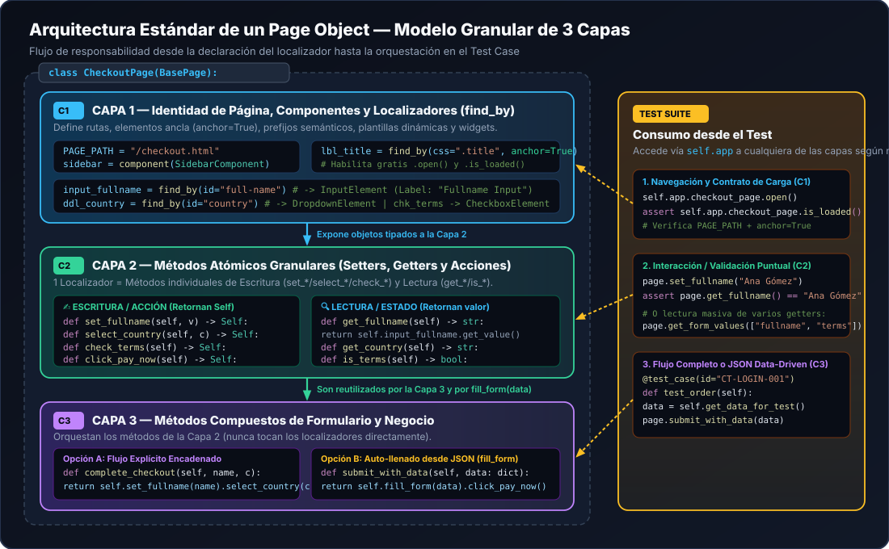
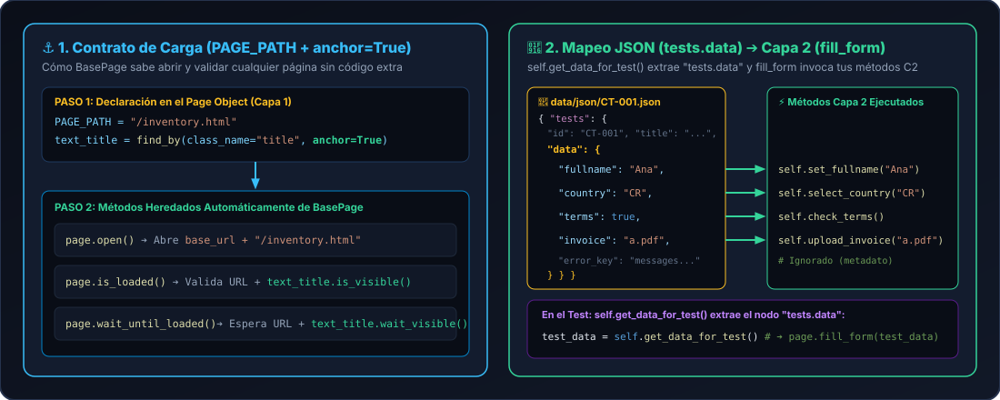

Enterprise Automation Framework
Portal de documentación técnica interactiva para automatización empresarial en Python + Selenium + Pytest + Allure.
Diseñado con arquitectura desacoplada (Core Engine vs Applications), descriptores
declarativos find_by con tipado semántico por prefijo, precondiciones Session-Aware
y soporte híbrido Web UI + REST API.
🚀 Guías Esenciales de Desarrollo (How-To Tiles)
Plantillas maestras, estándares de 3 capas y buenas prácticas corporativas para crear artefactos de prueba:
BasePage para modelar pantallas desacoplando localizadores, métodos atómicos y flujos de negocio.
-
1
Capa 1: Localizadores
find_by(..., anchor=True)con prefijos oficiales yPAGE_PATH. -
2
Capa 2: Métodos atómicos tipados (
set_*,get_*,click_*) con retornoSelf. -
3
Capa 3: Métodos compuestos de negocio (
login,fill_form). -
4
Orquestador: Registro lazy-loading como
@propertyen<app>_app.py(self.app).
-
1
Herencia: Extender de
BaseComponentenapplications/web/<app>/components/. -
2
Selectores Propios: Declarar localizadores
find_byy métodos atómicos del widget. - 3 Matriz de Modales: Distinguir Modales Globales (Session Timeout) vs de Página (Checkout).
-
4
Inyección: Vincular en Page Objects mediante
sidebar = component(SidebarComponent).
-
1
Herencia & Decorador: Heredar de
BaseTesty usar el decorador de app (ej.@demo). -
2
Metadata JSON 360°: Decorar con
@test_case(id='<TEST_ID>')conectado adata/json/. -
3
Precondiciones por Rol: Usar
@pytest.mark.usefixtures("as_<role>")Session-Aware. -
4
Narrativa Allure: Fases
with allure.step("...")y prohibición total de.element().
Browse Your Topics
- Descriptor find_by & Labels
- Prefijos Semánticos & Tipado
- Widgets Reutilizables BaseComponent
- App Orchestrator (self.app)
- Contrato PAGE_PATH & anchor
- Config YAML (dev, qa, uat, prod)
- Precondiciones Session-Aware
- Identity Switch automático
- Cifrado b64: y ENC: de claves
- Conexiones Multi-Base de Datos
- Endpoints Object Model (EOM)
- RequestBuilder & APIResponse
- Visual Regression & Auto-Healing
- Trazabilidad de Logs por Hilo
- Allure Report & Video OpenCV
🏆 Calificación de Arquitectura Enterprise
| Pilar Evaluado | Calificación | Justificación Técnica |
|---|---|---|
| Arquitectura y Escalabilidad | 9.8 / 10 | Separación estricta entre el motor (core/) y las reglas de negocio (applications/). Soporta múltiples productos Web y API en un mismo repositorio sin colisiones. |
| Mantenibilidad (Clean Code & Tipado) | 9.9 / 10 | Descriptor find_by con prefijos semánticos (input_, btn_, tbl_) que exponen únicamente métodos válidos en el autocompletado del IDE y registran etiquetas legibles (label). |
| Rendimiento y Ejecución Paralela | 9.8 / 10 | Carga perezosa (Lazy Loading) de acciones, caché de elementos por instancia de driver, aislamiento con threading.local() y captura secuencial de logs por hilo/worker. |
| Observabilidad y Diagnóstico | 9.7 / 10 | Logs enriquecidos con [Thread/Worker|TestID], capturas automáticas en fallos, grabación de video OpenCV y adjuntos automáticos en Allure Report. |
⚙️ Instalación, Requisitos y Redes Corporativas
Sigue estos pasos para preparar tu entorno local en Windows, macOS o Linux:
# 1. Crear entorno virtual
python -m venv .venv
# 2. Activar entorno virtual (Windows PowerShell)
.\.venv\Scripts\Activate.ps1
# En Linux / macOS: source .venv/bin/activate
# 3. Actualizar pip e instalar dependencias
python -m pip install --upgrade pip
pip install -r requirements.txt
Si estás en una red corporativa y recibes el error SSLCertVerificationError: [SSL: CERTIFICATE_VERIFY_FAILED]
al instalar paquetes con pip o al descargar drivers con webdriver-manager, aplica las siguientes configuraciones:
pip install --trusted-host pypi.org `
--trusted-host files.pythonhosted.org `
-r requirements.txtWDM_SSL_VERIFY=0
PYTHONHTTPSVERIFY=0💻 Extensiones Recomendadas y Botón "Play" en VS Code
El proyecto incluye configuración preajustada en pytest.ini (con pythonpath = . y python_files = test_*.py)
para que el panel de Testing (matraz de laboratorio) de VS Code descubra todos los casos de prueba automáticamente y muestre el botón verde Play (▷) junto a cada clase y método.
| Extensión | ID en Marketplace | Propósito en el Framework |
|---|---|---|
| Python | ms-python.python |
Ejecución de pruebas con un clic (Play button), depuración (F5) y detección de entornos virtuales. |
| Pylance | ms-python.vscode-pylance |
Motor de inferencia de tipos que habilita el autocompletado inteligente para InputElement, ButtonElement, TableElement, etc. |
| Black Formatter | ms-python.black-formatter |
Formateo estándar PEP8 automático al guardar archivos. |
| YAML | redhat.vscode-yaml |
Validación de sintaxis para archivos config/environments/{env}.yaml y workflows de CI/CD. |
🏗️ Arquitectura General del Proyecto
El repositorio divide estrictamente la infraestructura técnica reutilizable (core/) de las implementaciones de cada producto (applications/).
go-python-selenium-automation/
├── core/ # ⚙️ MOTOR CENTRAL DUAL ENGINE (Selenium ⚡ & Playwright 🎭)
│ ├── api/ # Motor REST API: BaseEndpoint, RequestBuilder, APIResponse, AsyncAPIClient (httpx)
│ ├── ui/
│ │ ├── actions/ # ⚡🎭 Suite de Acciones Dual Engine con Paridad Nativa 1:1 (20/20 Categorías)
│ │ │ ├── contracts/ # Contratos abstractos (ABC) con interfaces estandarizadas
│ │ │ ├── selenium/ # 20 clases nativas de Selenium WebDriver (W3C Protocol)
│ │ │ ├── playwright/ # 20 clases nativas de Microsoft Playwright (CDP Native)
│ │ │ ├── factory.py # ActionFactory: Despachador polimórfico en tiempo de ejecución
│ │ │ └── ui_element.py # Facade universal de 3 capas consumido por los Page Objects
│ │ ├── common/ # Clases base: BasePage, BaseComponent, BaseApp, BaseTest, find_by
│ │ ├── driver/ # DriverManager Selenium (Local, Grid, BrowserStack, SauceLabs)
│ │ ├── playwright/ # PlaywrightDriverFactory (CDP Native), Playwright Trace Viewer, Shim
│ │ └── services/ # Grabador de video OpenCV (MSS / CDP), Visual Testing, Auto-healing
│ └── utils/ # SplashScreen (AAA Cockpit), ConfigManager, FailureAnalyzer, Decoradores
│
├── applications/ # 📦 APLICACIONES BAJO PRUEBA (Negocio)
│ ├── api/
│ │ └── demo/ # Proyecto API Demo (Endpoints Object Model + Async Pipeline)
│ │ ├── config/environments/ # Archivos YAML por ambiente (dev.yaml, qa.yaml, uat.yaml, prod.yaml)
│ │ ├── data/ # Payloads y esquemas JSON por Test ID
│ │ ├── endpoints/ # Clases que heredan de BaseEndpoint
│ │ ├── tests/ # Suites que heredan de BaseAPITest y TestAsyncAPIPipeline
│ │ └── client.py # Orquestador de API
│ └── web/
│ └── demo/ # Proyecto Web Demo (Page Object Model)
│ ├── app/demo_app.py # Orquestador de páginas (DemoApp -> self.app)
│ ├── components/ # Widgets transversales (ej. SidebarComponent -> BaseComponent)
│ ├── config/environments/ # 1 archivo YAML por ambiente: dev.yaml, qa.yaml, uat.yaml, prod.yaml
│ ├── data/json/ # 1 archivo JSON por Test ID (ej. CT-LOGIN-001.json)
│ ├── fixtures/ # Precondiciones reutilizables (ej. login_fixtures.py)
│ ├── pages/ # Page Objects que heredan de BasePage
│ └── tests/ # Tests que heredan de BaseTest
│
├── tools/ # 🛠️ HERRAMIENTAS ENTERPRISE Y AUTOMATION STUDIO
│ ├── certify_framework.py # 🏆 Certificador Oficial de Calidad 10/10 Gold Master
│ └── test_runner/ # 🎛️ Test Runner GUI con Ribbon Toolbar MS Office y Playwright Trace Viewer
│
├── .github/workflows/ # 🚀 Integración Continua (CI/CD Matrix: Ubuntu & Windows, Py 3.11-3.13)
│ └── ci.yml
│
├── docs/ # 📚 Portal Web de Documentación Interactiva
└── pytest.ini # Configuración global de Pytest y descubrimiento de testsEl framework está diseñado para alternar dinámicamente entre Selenium WebDriver (Protocolo W3C) y Microsoft Playwright (Nativo CDP) sin modificar una sola línea de código en tus Page Objects o archivos de prueba:
Ejecuta con el motor estándar W3C con WebDriverWait y ActionChains. Ideal para navegadores tradicionales, grids remotos y testing multiplataforma.
$env:ENGINE="selenium"; pytest
Ejecuta conectándose directamente a los sockets CDP de Chromium con auto-waiting nativo, menor consumo de recursos y maximizado automático de pantalla completa.
$env:ENGINE="playwright"; pytest
📊 Funcionamiento Técnico y Diagramas de Flujo del Framework
Esta sección desglosa visual y técnicamente los 6 núcleos fundamentales que rigen el motor de automatización. Cada diagrama ilustra el flujo de control, la sincronización entre componentes y los contratos de entrada/salida.
Secuencia desde que el ingeniero o el Web Runner dispara la ejecución hasta la entrega de evidencias en Allure, videos OpenCV y trazas CDP.
El ingeniero dispara pytest --app=demo --env=qa -o engine=playwright o selecciona la suite desde el Runner Web.
Captura opciones de ejecución, inicializa listeners de Allure, limpia carpetas de reportes anteriores y configura paralelismo pytest-xdist.
Carga config/environments/qa.yaml, desencripta contraseñas seguras con prefijo b64: o ENC: e inicializa conexiones a bases de datos relacionales en databases.connections.
Enlaza el caso con su archivo CT-LOGIN-001.json. Inyecta metadatos a Allure (epic, feature, story, severity, bugs) y carga datos de entrada (data) y oráculos esperados (expected).
Inicializa el controlador correspondiente (Selenium WebDriver W3C o Playwright CDP). En modo no-headless muestra el SplashScreen (3.8s) y arranca la grabación de pantalla completa con VideoRecorder (OpenCV).
Si el test requiere el mismo rol activo en Modo Persistente, omite el login y arranca directamente en la pantalla objetivo (ahorro de 8 a 15 segundos).
Limpia cookies, localStorage y sessionStorage atómicamente, y ejecuta el login con el nuevo rol solicitado desde el archivo YAML.
El test interactúa mediante self.app en bloques narrativos with allure.step(...). Toda acción compuesta espera internamente la desaparición de spinners antes de validar con self.get_expected_for_test().
Finaliza el video MP4, exporta el archivo reports/traces/<ID>_trace.zip (en Playwright), destruye o conserva la sesión según el modo de aislamiento y publica evidencias en Allure.
Pytest analiza los parámetros de ejecución (--app, --env, --browser, -o engine=...) e inicializa el colector de pruebas.
@project_config lee el archivo YAML correspondiente al ambiente, decodifica contraseñas seguras con prefijo b64: o ENC: e inicializa las conexiones a bases de datos configuradas en databases.connections.
El decorador @test_case(id="...") asocia el caso con su archivo data/json/<TEST_ID>.json, inyectando título, epic, feature, severity, inputs y oráculos esperados en Allure.
BaseTest invoca la factoría de controladores correspondiente (Selenium WebDriver o Playwright CDP). En modo no-headless lanza el SplashScreen y arranca la grabación de pantalla completa con OpenCV.
El test interactúa exclusivamente a través del orquestador self.app. Toda mutación asíncrona espera la desaparición del loader antes de validar con mensajes de error enriquecidos.
Se finaliza el video MP4 y en ejecuciones Playwright se exporta el archivo reports/traces/<ID>_trace.zip adjuntándolo a Allure para depuración paso a paso en el Trace Viewer.
Separación arquitectónica obligatoria para evitar acoplamiento entre selectores DOM, acciones atómicas y lógica de negocio.
Declara atributos de clase usando el descriptor find_by con prefijos oficiales (input_, btn_, lbl_, tbl_), anchor=True para contrato de carga y widgets component(SidebarComponent).
input_username = find_by(id="user-name", label="Usuario", anchor=True)
Expone un método individual por elemento interactivo. Escritura y clicks retornan Self para permitir encadenamiento fluido; lectura retorna valores primitivos (str, bool).
def set_username(self, val: str) -> Self: self.input_username.type(val); return self
Encadena llamadas de la Capa 2 y sincroniza internamente esperando a que desaparezcan loaders y spinners antes de devolver el control al test.
def login(self, u, p) -> Self: return self.set_username(u).set_password(p).click_login().wait_for_loader_to_disappear()
El test nunca toca elementos DOM directos. Ejecuta bloques with allure.step(...) (Navegación → Acción → Sincronización → Verificación) y compara contra oráculos del JSON.
actual = self.app.inventory_page.get_title(); assert actual == expected
Declara los elementos como atributos de clase usando el descriptor find_by. Todo localizador lleva prefijo semántico (input_, btn_, lbl_, tbl_) y al menos un anchor=True para habilitar is_loaded().
Expone un método por elemento interactivo. Los métodos de acción (set_*, click_*, select_*) retornan siempre Self para permitir encadenamiento fluido. Los métodos de lectura retornan tipos primitivos (str, bool, int).
Encadena llamadas de la Capa 2. En operaciones que disparan peticiones asíncronas o renders, sincroniza internamente esperando a que el spinner desaparezca antes de devolver el control al test.
applications/web/<app>/pages/
Cómo una única llamada en el Page Object (ej. element.click() o element.type()) se resuelve dinámicamente sobre Selenium W3C o Playwright CDP manteniendo paridad nativa 1:1.
El Page Object invoca un verbo universal: self.btn_submit.click() o self.input_user.type("demo").
Aplica auto-esperas inteligentes (wait_clickable, wait_visible) y solicita la acción al despachador central:
ActionFactory.create("click", driver).click(locator)
• Protocolo W3C estándar sobre HTTP JSONWire.
• WebDriverWait(driver, timeout) con polling de 500ms.
• ActionChains(driver).move_to_element().click().
• Respaldo automático mediante JavaScript click si ocurre StaleElement.
• Conexión bidireccional directa por WebSockets CDP.
• Auto-waiting nativo en C++ antes de cada acción.
• locator.click(force=False, timeout=10000).
• Grabación forense paso a paso en reports/traces/<ID>_trace.zip.
Mismo resultado visual, mismos reportes en Allure y misma velocidad sin modificar una sola línea de código en los Page Objects.
| Característica | ⚡ Selenium WebDriver (W3C) | 🎭 Microsoft Playwright (CDP) |
|---|---|---|
| Protocolo de Red | HTTP JSONWire / W3C WebDriver Spec | WebSockets bidireccionales directos (CDP) |
| Estrategia de Esperas | WebDriverWait explícito con polling de 500ms |
Auto-waiting nativo en motor C++ antes de cada acción |
| Depuración y Trazas | Video OpenCV MP4 + Capturas Allure | trace.zip (Playwright Trace Viewer interactivo) |
| Cambio de Motor | Transparente: $env:ENGINE="selenium" o $env:ENGINE="playwright" sin tocar código de pruebas |
|
Algoritmo inteligente de tres vías implementado en authenticate_as_role() para optimizar la velocidad en Modo Persistente sin contaminar sesiones.
El caso de prueba declara qué identidad requiere para ejecutarse.
1. Abre navegador virgen completamente limpio.
2. Navega a /login y autentica con el rol solicitado.
3. Ejecuta el test.
4. Destruye la sesión y cierra el navegador al finalizar.
Mantiene el navegador abierto entre pruebas para compartir la misma instancia de WebDriver y acelerar la suite.
• Mantiene el navegador exactamente en el estado actual.
• Cero llamadas de red de autenticación innecesarias.
• Ahorra entre 8 y 15 segundos por prueba.
1. driver.delete_all_cookies()
2. localStorage.clear() y sessionStorage.clear()
3. Navega a /login y autentica con el nuevo rol.
4. Actualiza el rol activo en sesión.
El test arranca directamente en su pantalla de negocio sin repetir pasos de login manuales en el cuerpo del test.
Si 10 tests consecutivos pertenecen al rol standard_user, el login se ejecuta una sola vez en el test 1; los tests 2 al 10 arrancan directamente en el catálogo de productos.
Si el test siguiente requiere problem_user, el framework purga almacenamiento local, cookies y tokens antes de autenticar al nuevo rol, impidiendo filtración de estados.
Los nombres de roles se mapean contra users.roles.<role> en los archivos de ambiente, soportando usuarios múltiples con contraseñas encriptadas de 3 niveles.
Arquitectura de compatibilidad que permite migrar Page Objects del framework anterior (ej. LoginPage.py) con 0% de modificaciones en su código y sin ensuciar la raíz de core/ui/actions/.
El código original permanece 100% idéntico:
from core.ui.common.BasePage import BasePage
from core.ui.actions.Click import Click
self.click().set_locator(loc).single_click()
Intercepta importaciones de core.ui.actions.<Accion>. En lugar de buscar archivos en disco, genera un módulo virtual dinámico en sys.modules que apunta directamente a las clases adaptadoras.
Emula los 17 métodos clásicos del framework anterior (navigation(), click(), send_keys(), scroll(), etc.) conectándolos con el nuevo motor.
Convierte las tuplas de 2 o 3 elementos del framework viejo (By.NAME, "username", "Input User") en instancias modernas de UIElement.
El Page Object legacy ejecuta sin saber que por debajo corre sobre el motor dual de alta velocidad, con auto-esperas y grabación de video. La carpeta core/ui/actions/ permanece 100% limpia y conforme a la Regla 8.1.
El archivo del Page Object viejo (ej. LoginPage.py) se copia directamente sin cambiar una sola línea. Sigue heredando de BasePage y llamando métodos como self.click().set_locator().single_click().
En core/ui/actions/__init__.py se registra un MetaPathFinder que intercepta las 18 acciones legacy. Cuando Python detecta from core.ui.actions.Click import Click, crea un módulo virtual en memoria y lo despacha a LegacyClick sin requerir archivos físicos en el disco.
Las clases adaptadoras convierten la tupla de 2 o 3 elementos del framework viejo en una instancia activa de UIElement moderno, heredando automáticamente esperas explícitas, logging de consola y soporte dual para Selenium y Playwright.
Arquitectura Endpoints Object Model (EOM) para pruebas de microservicios con validación de esquemas JSON, soporte asíncrono y fuzzy matching.
Define los casos de prueba declarativos consumiendo el cliente de endpoints: self.client.users_endpoint.create_user(payload).
Análogo a los Page Objects, modela cada endpoint como una clase con métodos atómicos de negocio (create_user, get_user_by_id, delete_user).
Configura de forma desacoplada la URL, verbo HTTP (POST, GET, PUT, DELETE), encabezados, Bearer token y cuerpo JSON.
• Ejecución HTTP secuencial estándar.
• Medición precisa de latencia por petición.
• Generación automática de comando cURL reproducible en Allure.
• Pipeline asíncrono no-bloqueante de ultra-alta velocidad.
• Connection Pooling reutilizable (keep-alive).
• Ideal para pruebas de concurrencia y validación masiva.
Encapsula el código de estado, latencia en ms (duration_ms), cuerpo JSON y headers.
• Validación de Esquema JSON: response.validate_schema(USER_SCHEMA)
• Validación Difusa (Fuzzy Match): Tolera campos dinámicos (IDs autonuméricos, timestamps ISO).
• Allure Attachments: Adjunta automáticamente la petición, respuesta y métricas de rendimiento.
Análogo al POM en UI, cada microservicio o recurso REST se modela como una clase en endpoints/ exponiendo métodos de negocio atómicos (create_user(), get_by_id()).
Desacopla la parametrización de la petición HTTP. Maneja query parameters, encabezados dinámicos, tokens de autenticación y serialización JSON.
core/api/common/request_builder.pyCompara la respuesta contra el contrato esperado en el JSON 360°, permitiendo comodines de tipo para campos no deterministas (como IDs generados por base de datos o fechas ISO).
core/api/common/api_response.py📐 Guía Paso a Paso: Cómo Crear un Page Object (Modelo Granular de 3 Capas)
En este framework, cada pantalla web se modela como una clase independiente dentro de applications/web/<app>/pages/<nombre>_page.py
heredando obligatoriamente de BasePage (core.ui.common.base_page).
Está estrictamente prohibido usar tuplas (By.ID, "...") o llamar self.element(...). Todo debe estructurarse en 3 Capas:
applications/web/<app>/pages/<nombre>_page.py heredando de BasePage.PAGE_PATH = "/ruta", marcar 1 o 2 elementos con anchor=True y usar find_by(...) con prefijos semánticos obligatorios (input_, btn_, lbl_, chk_, tbl_).Self (set_*, click_*); lecturas retornan tipos primitivos (get_*() -> str, is_*() -> bool).login, fill_form). Prohibido llamar directamente a self.input_* aquí.@property con lazy loading en <app>_app.py para acceder como self.app.<nombre>_page.from typing import Self
from core.ui.common.base_page import BasePage
from core.ui.common.find_by import find_by
class LoginPage(BasePage):
# =========================================================================
# CAPA 1 — Identidad de Página y Localizadores Declarativos (find_by)
# =========================================================================
PAGE_PATH = "/"
# Localizadores con prefijos semánticos oficiales y anchor de carga
input_username = find_by(id="user-name", label="Username Field", anchor=True)
input_password = find_by(id="password", label="Password Field")
btn_login = find_by(id="login-button", label="Login Submit Button")
lbl_error_message = find_by(css="[data-test='error']", label="Error Message Label")
# =========================================================================
# CAPA 2 — Métodos Atómicos Granulares (Solo acciones de ui_element.py)
# =========================================================================
def set_username(self, username: str) -> Self:
"""Escribe en el campo username (retorna Self para encadenamiento)."""
self.input_username.type(username)
return self
def set_password(self, password: str) -> Self:
"""Escribe en el campo password de forma segura."""
self.input_password.type(password)
return self
def click_login(self) -> Self:
"""Hace clic en el botón de login."""
self.btn_login.click()
return self
def get_error_message(self) -> str:
"""Retorna el texto del mensaje de error para aserciones."""
return self.lbl_error_message.get_trimmed_text()
def is_error_displayed(self) -> bool:
"""Verifica si el banner de error es visible en la pantalla."""
return self.lbl_error_message.is_visible()
# =========================================================================
# CAPA 3 — Métodos Compuestos de Negocio y Formularios
# =========================================================================
def login(self, username: str, password: str) -> Self:
"""Flujo completo de autenticación encadenando métodos atómicos de Capa 2."""
return self.set_username(username).set_password(password).click_login()
Toda nueva página debe registrarse en el App Orchestrator (applications/web/<app>/app/<app>_app.py)
para que los tests puedan consumirla limpiamente sin instanciarla manualmente:
from core.ui.common.base_app import BaseApp
from applications.web.demo.pages.login_page import LoginPage
from applications.web.demo.pages.inventory_page import InventoryPage
class DemoApp(BaseApp):
@property
def login_page(self) -> LoginPage:
"""Retorna la instancia de LoginPage con inicialización perezosa (lazy)."""
return self._get_page(LoginPage)
@property
def inventory_page(self) -> InventoryPage:
"""Retorna la instancia de InventoryPage."""
return self._get_page(InventoryPage)🎯 Estándar Page Object Model y Descriptor find_by
En este framework no se instancian tuplas (By.ID, "...") ni se llama a self.element(...) manualmente en cada método.
Todos los localizadores se declaran en la cabecera de la clase usando el descriptor declarativo find_by ubicado en core/ui/common/find_by.py,
siguiendo un modelo estructurado en 3 Capas de Responsabilidad:

find_by y del Contrato BasePage- Cero Boilerplate: Al acceder a
self.input_username, retorna directamente el elemento listo para encadenar acciones (.send_keys(),.click()). - Tipado Semántico por Prefijo: Según el nombre del atributo (
input_,button_,tbl_), el descriptor devuelve una subclase especializada con solo los métodos aplicables. - Label Auto-Humanizado: Si pasas
label="Username Field"lo usa; si lo omites, convierte automáticamenteinput_first_nameen"First Name Input". - Identidad y Carga (
PAGE_PATH+anchor=True): Todas las páginas heredan gratis.open(),.is_loaded()y.wait_until_loaded(). - Localizadores Dinámicos (
.format()): Soporta plantillas con placeholders{product}sin romper la Capa 1. - Auto-llenado desde JSON (
fill_form): Conecta diccionarios de datos directamente con tus métodos atómicosset_*,select_*ycheck_*.
Todo Page Object se organiza en 3 capas de responsabilidad:
(1) Identidad y Localizadores, (2) Métodos Atómicos (set_*, get_*, click_*) y (3) Métodos Compuestos que orquestan a los atómicos.
from typing import Self, Dict, Any
from core.ui.common.base_page import BasePage
from core.ui.common.find_by import find_by
class LoginPage(BasePage):
# CAPA 1: Localizadores declarativos (anchor=True valida carga en is_loaded)
input_username = find_by(id="user-name", label="Username Field")
input_password = find_by(id="password", label="Password Field")
button_login = find_by(id="login-button", label="Login Button", anchor=True)
text_error_message = find_by(
css="h3[data-test='error']", label="Login Error Banner"
)
# CAPA 2: Métodos Atómicos Granulares (Setters, Getters y Clics)
def set_username(self, username: str) -> Self:
self.input_username.send_keys(username)
return self
def get_username(self) -> str:
return self.input_username.get_value()
def set_password(self, password: str) -> Self:
self.input_password.send_keys(password)
return self
def get_password(self) -> str:
return self.input_password.get_value()
def click_login(self) -> Self:
self.button_login.click()
return self
def get_error_message(self) -> str:
return self.text_error_message.get_text()
# CAPA 3: Métodos Compuestos (Invocan a los métodos atómicos o fill_form)
def login(self, username: str, password: str) -> Self:
return (
self.set_username(username)
.set_password(password)
.click_login()
)
def login_with_data(self, data: Dict[str, Any]) -> Self:
return self.fill_form(data).click_login()Estrategias de Localización y Plantillas Dinámicas (.format())
from core.ui.common.find_by import (
find_by, find_input, find_button, find_text, find_dropdown,
find_checkbox, find_table, find_upload, find_container, find_media,
)
# 1. Estrategias soportadas por keyword argument:
input_user = find_by(id="user-name", label="Username", anchor=True)
input_email = find_by(name="email") # Auto-genera label: "Email Input"
button_submit = find_by(xpath="//button[@type='submit']", label="Submit Button")
lbl_title = find_by(css=".header-title", label="Page Header")
# 2. Localizadores Dinámicos con placeholders {} (se formatean en la Capa 2):
button_add_product = find_by(
xpath="//div[text()='{product}']/ancestor::div[@class='inventory_item']//button",
label="Add '{product}' to Cart Button",
)
# Uso dentro del método atómico de la página:
def click_add_product(self, product_name: str) -> Self:
self.button_add_product.format(product=product_name).click()
return self⚓ Contrato Estándar de Identidad y Carga de Página (PAGE_PATH + anchor=True) & fill_form
En lugar de inventar métodos distintos en cada página (como is_login_successful(), is_title_visible() o check_page_ready()),
el framework estandariza cómo se abre y cómo se valida que cualquier página cargó mediante dos declaraciones opcionales en la Capa 1, y cómo se pueblan formularios desde JSON:

PAGE_PATH = "/inventory.html": Indica la ruta URL relativa de esa pantalla. Si llamas apage.open(), navega automáticamente abase_url + PAGE_PATH.anchor=Trueenfind_by(...): Marca los 1 o 2 elementos clave que garantizan que la pantalla terminó de cargar.
class InventoryPage(BasePage):
PAGE_PATH = "/inventory.html"
# Elemento ancla que confirma que la página cargó
text_title = find_by(
class_name="title",
label="Products Page Title",
anchor=True,
)page.open() -> Self: Abrebase_url + PAGE_PATH(obase_urlsi no tienePAGE_PATH).page.is_loaded() -> bool: Verifica quePAGE_PATHesté en la URL actual y que todos los elementos conanchor=Trueestén visibles. Ideal para tusassert.page.wait_until_loaded() -> Self: Espera explícitamente a que la URL contengaPAGE_PATHy a que los elementosanchor=Truesean visibles.
# Todas las páginas del proyecto se validan igual:
self.app.inventory_page.wait_until_loaded()
assert self.app.inventory_page.is_loaded()🏷️ Explorador Interactivo de Prefijos y Clases Especializadas
El descriptor find_by inspecciona automáticamente el nombre de la variable en Python mediante el hook __set_name__.
Si el nombre comienza con uno de los prefijos oficiales, retorna la clase especializada correspondiente.
Si no usa un prefijo reconocido, emite un logger.warning("[NAMING CONVENTION]...") y hace fallback seguro a UIElement completo para no romper la ejecución.
| Categoría | Prefijos Soportados | Clase Retornada | Métodos Exclusivos / Principales |
|---|---|---|---|
| 1. Campos de Entrada | input_, txtbox_, textarea_, field_, search_ |
InputElement |
.send_keys(), .type_slowly(), .clear(), .press_enter(), .press_tab(), .press_escape(), .copy_all(), .paste(), .get_value() |
| 2. Botones y Enlaces | btn_, button_, lnk_, link_, tab_, icon_, ico_, menu_, nav_ |
ButtonElement |
.click(), .double_click(), .right_click(), .js_click(), .hover(), .click_and_hold(), .drag_and_drop_to(), .get_text() |
| 3. Textos, Títulos y Alertas | lbl_, label_, txt_, text_, title_, hdr_, header_, msg_, err_, error_, badge_, val_, span_, stat_, alert_, toast_ |
TextElement |
.get_text(), .extract_number(), .extract_currency(), .extract_regex(), .wait_until_text_contains() (Bloquea escritura accidental) |
| 4. Listas Desplegables | ddl_, select_, dropdown_, cmb_, combo_, cbo_ |
DropdownElement |
.select_by_text(), .select_by_value(), .select_by_index(), .select_by_partial_text(), .get_selected_text(), .get_all_options() |
| 5. Checkboxes, Radios y Switches | chk_, checkbox_, rdo_, radio_, tgl_, toggle_, swt_, switch_ |
CheckboxElement |
.check(), .uncheck(), .toggle(), .set_checked(bool), .is_checked(), .is_selected() |
| 6. Tablas y DataGrids | tbl_, table_, grid_, datagrid_, list_, lst_ |
TableElement |
.get_headers(), .get_row_count(), .get_cell_text(row, col), .get_table_data(), .find_row_by_column_value(), .click_in_row() |
| 7. Carga de Archivos | upl_, upload_, file_ |
UploadElement |
.upload_file(path), .upload_multiple_files([paths]) |
| 8. Contenedores, Modales y Filas | mdl_, modal_, dlg_, dialog_, pnl_, panel_, card_, sec_, section_, cnt_, container_, div_, box_, form_, frm_, row_, item_ |
ContainerElement |
.wait_visible(), .wait_invisible(), .scroll_into_view(), .click(), .get_text(), .screenshot_as_png() |
| 9. Imágenes, Íconos SVG y Canvas | img_, image_, svg_, canvas_, vid_, video_, avatar_, logo_ |
MediaElement |
.is_displayed(), .get_attribute("src"), .screenshot_as_png(), .click(), .hover() |
🧩 Guía Paso a Paso: Cómo Crear Componentes Reutilizables (BaseComponent)
Los componentes UI desacoplan elementos repetitivos (barras de navegación, pies de página, widgets y modales) de las páginas específicas.
Se crean en applications/web/<app>/components/<nombre>_component.py heredando de BaseComponent
(core.ui.common.base_component) y se inyectan en los Page Objects usando el descriptor component(...).
| Escenario de la Interfaz | Clasificación | Ubicación y Estándar |
|---|---|---|
| Barras de Navegación, Headers, Sidebars o Footers compartidos | Widget Reutilizable | components/<name>_component.py heredando de BaseComponent. |
| Modales Globales (Session Timeout, Confirmación de Eliminación, Error 500) | Modal Global | components/<name>_component.py montado en el DOM raíz. |
| Modales Propios de una Página con 5+ campos, tablas o wizard interno | Modal Complejo | components/<name>_component.py para evitar saturar el Page Object. |
| Modales Propios de una Página simples (< 4 campos simples acoplados) | Elemento de Página | Modelar dentro del Page Object con prefijo mdl_ y métodos directos. |
from typing import Self
from core.ui.common.base_component import BaseComponent
from core.ui.common.find_by import find_by
class HeaderComponent(BaseComponent):
# Localizadores encapsulados del widget
btn_menu = find_by(id="react-burger-menu-btn", label="Menu Toggle Button")
lnk_cart = find_by(css=".shopping_cart_link", label="Shopping Cart Link")
lbl_cart_badge = find_by(css=".shopping_cart_badge", label="Cart Item Count Badge")
def click_cart(self) -> Self:
"""Navega a la pantalla del carrito de compras."""
self.lnk_cart.click()
return self
def get_cart_count(self) -> int:
"""Retorna el número de artículos en el badge (0 si no está visible)."""
if self.lbl_cart_badge.is_visible():
return self.lbl_cart_badge.get_int()
return 0component(...)from typing import Self
from core.ui.common.base_page import BasePage
from core.ui.common.base_component import component
from core.ui.common.find_by import find_by
from applications.web.demo.components.header_component import HeaderComponent
class InventoryPage(BasePage):
PAGE_PATH = "/inventory.html"
# Inyección limpia del componente reutilizable
header = component(HeaderComponent)
# Localizadores propios de la página
lbl_title = find_by(css=".title", label="Products Title", anchor=True)
btn_add_backpack = find_by(id="add-to-cart-sauce-labs-backpack", label="Add Backpack Button")
def add_backpack_to_cart(self) -> Self:
self.btn_add_backpack.click()
return self
def get_cart_total_items(self) -> int:
# Delega la consulta directamente al componente
return self.header.get_cart_count()🧩 Componentes UI Reutilizables (BaseComponent)
Cuando tu aplicación web tiene barras de navegación, menús laterales (sidebars), cabeceras, pies de página o modales que aparecen en múltiples páginas,
no dupliques sus localizadores. Crea un componente heredando de BaseComponent (core/ui/common/base_component.py) y compónlo dentro de tus Page Objects.
from core.ui.common.base_component import BaseComponent
from core.ui.common.find_by import find_by
class SidebarComponent(BaseComponent):
btn_open_menu = find_by(id="react-burger-menu-btn", label="Open Sidebar Button")
btn_close_menu = find_by(id="react-burger-cross-btn", label="Close Sidebar Button")
lnk_logout = find_by(id="logout_sidebar_link", label="Logout Sidebar Link")
def open(self):
self.btn_open_menu.click()
self.lnk_logout.wait_visible()
return self
def logout(self):
self.open()
self.lnk_logout.click()
return selfcomponent(...)from core.ui.common.base_page import BasePage
from core.ui.common.base_component import component
from core.ui.common.find_by import find_by
from applications.web.demo.components.sidebar_component import SidebarComponent
class InventoryPage(BasePage):
PAGE_PATH = "/inventory.html"
text_title = find_by(class_name="title", label="Header Title", anchor=True)
# Descriptor declarativo de 1 línea con autocompletado y caché
sidebar = component(SidebarComponent)
def logout_from_inventory(self):
return self.sidebar.logout()🚀 Orquestador de Aplicación (DemoApp / self.app)
En los archivos de prueba (tests/test_*.py), nunca instancies Page Objects manualmente con LoginPage(self.driver).
Cada aplicación define un archivo app.py que hereda de BaseApp y expone todas las páginas mediante propiedades con lazy initialization.
El decorador de la aplicación (ej. @demo) inyecta automáticamente self.app en el test.
from core.ui.common.base_app import BaseApp
from applications.web.demo.pages.login_page import LoginPage
from applications.web.demo.pages.inventory_page import InventoryPage
class DemoApp(BaseApp):
@property
def login_page(self) -> LoginPage:
return self._get_page(LoginPage)
@property
def inventory_page(self) -> InventoryPage:
return self._get_page(InventoryPage)from core.ui.common.base_test import BaseTest
from applications.web.demo.utils.decorators import demo
@demo
class TestLogin(BaseTest):
def test_valid_login(self):
self.app.login_page.open().login("standard_user", "secret_sauce")
assert self.app.inventory_page.is_loaded()
assert self.app.inventory_page.get_header_title() == "Products"🧭 Métodos Globales de BasePage
Toda clase que hereda de BasePage dispone de controladores perezosos (lazy-loaded) para gestionar el navegador, ventanas, pestañas, iframes, alertas nativas y ejecución de scripts:
| Categoría | Propiedad / Método en BasePage |
Descripción y Ejemplo de Uso |
|---|---|---|
| Navegación |
self.navigation.go_to_url(url)self.navigation.refresh_page()self.navigation.go_back() / .go_forward()self.navigation.get_current_url()self.navigation.get_title()self.navigation.wait_url_contains(text)self.navigation.wait_url_matches(regex)
|
Controla el historial del navegador y realiza esperas explícitas sobre la URL activa.self.navigation.wait_url_contains("inventory.html")
|
| Ventanas y Pestañas |
self.window.switch_to_new_window()self.window.switch_to_window_by_title(title)self.window.switch_to_window_by_index(idx)self.window.close_current_window_and_switch_back()
|
Permite cambiar el foco entre pestañas o ventanas emergentes abiertas durante el flujo. |
| IFrames |
self.frame.switch_to_frame(locator_or_id)self.frame.switch_to_default_content()self.frame.switch_to_parent_frame()
|
Cambia el contexto del DOM hacia un <iframe> y regresa al documento raíz cuando finaliza.
|
| Alertas JS |
self.alert.accept_alert()self.alert.dismiss_alert()self.alert.get_alert_text()self.alert.send_keys_to_alert(text)
|
Interactúa con diálogos nativos del navegador (window.alert, confirm, prompt).
|
| Scroll de Página |
self.scroll.to_top()self.scroll.to_bottom()self.scroll.by_pixels(x, y)
|
Desplaza el viewport global de la ventana actual. |
⚡ Catálogo Completo de Métodos de Elementos (UIElement y Subclases)
Todos los elementos declarados con find_by soportan encadenamiento fluido (Fluent API) y el modificador dinámico de timeout .at(segundos) para casos puntuales donde un elemento tarda más o menos que el timeout global.
| Grupo Funcional | Método | Descripción |
|---|---|---|
| Modificador de Timeout | .at(seconds: int) |
Ajusta temporalmente el timeout de espera explícita solo para la siguiente acción encadenada: self.button_login.at(25).click(). |
| Shadow DOM Piercing | .shadow(is_shadow=True)find_by(..., shadow=True) |
Perfora recursivamente cualquier profundidad de árboles #shadow-root (open) mediante JavaScript nativo de alto rendimiento. Además, si un elemento no se localiza en el DOM regular, el motor ejecuta la perforación en Shadow DOM como fallback automático y transparente. |
| Mouse y Clics |
.click().double_click().right_click().js_click().hover().click_and_hold(duration).drag_and_drop_to(target_locator)
|
Espera a que el elemento sea clicable, hace scroll automático si está fuera de vista y ejecuta la acción. .js_click() ejecuta el clic directamente vía JavaScript cuando un overlay intercepta el evento nativo.
|
| Teclado e Inputs |
.send_keys(text, clear_first=True).type_slowly(text, delay=0.1).clear().js_set_value(value).press_enter() / .press_tab() / .press_escape().copy_all() / .paste()
|
Limpia el campo automáticamente antes de escribir, simula escritura humana tecla por tecla (útil para autocompletados con debounce) o envía atajos de teclado. |
Dropdowns (<select>) |
.select_by_text(text).select_by_value(value).select_by_index(index).select_by_partial_text(partial).get_selected_text().get_all_options()
|
Envuelve la clase Select de Selenium con esperas explícitas y validaciones detalladas.
|
| Checkboxes y Radios |
.check().uncheck().toggle().set_checked(bool).is_checked()
|
Idempotente: .check() solo hace clic si el elemento no estaba marcado previamente; .uncheck() solo hace clic si estaba marcado.
|
| Lectura y Extracción |
.get_text().get_value().get_attribute(attr).get_css_property(prop).extract_number().extract_currency().extract_regex(pattern, group=0)
|
Obtiene texto visible o parsea automáticamente montos monetarios (ej. "$1,250.50" -> 1250.5), enteros o grupos de expresiones regulares.
|
| Esperas y Estados |
.is_displayed() / .is_enabled().is_present().wait_visible() / .wait_invisible().wait_clickable() / .wait_presence().wait_until_text_contains(substring).wait_until_attribute_contains(attr, val)
|
Sincronización inteligente sin usar time.sleep(). Retorna booleanos seguros para tus bloques assert.
|
| Sincronización de Red (Network Idle) | self.wait_network_idle(timeout=10, idle_time=0.3) |
Disponible en todos los Page Objects (heredado de BasePage) y conectado automáticamente en open() y wait_until_loaded(). Monitoriza en tiempo real peticiones activas de fetch() y XMLHttpRequest garantizando estabilidad antes de interactuar. |
Tablas HTML (TableElement) |
.get_headers().get_row_count().get_cell_text(row, col).get_table_data().find_row_by_column_value(col_name, val).click_in_row(col_name, val, target_col)
|
Convierte tablas HTML completas en listas de diccionarios Python o localiza un botón de acción ("Editar", "Eliminar") dentro de la fila que coincida con un ID o nombre específico. |
🧪 Estándar de Granularidad en Page Objects (Atómicos + Compuestos)
El estándar de diseño del framework exige que cada campo de un formulario tenga primero sus métodos atómicos de escritura (set_* / select_* / check_*) y lectura (get_* / is_*),
y que los métodos compuestos de formulario o flujo (fill_checkout_form, complete_order_flow) reutilicen esos métodos atómicos en lugar de acceder directamente a los localizadores:
from core.ui.common.base_page import BasePage
from core.ui.common.find_by import find_by
class CheckoutPage(BasePage):
# =========================================================================
# 1. LOCALIZADORES DECLARATIVOS (Prefijo Semántico + Label)
# =========================================================================
input_search = find_by(id="search-box", label="Product Search Box")
input_fullname = find_by(id="full-name", label="Customer Full Name")
ddl_country = find_by(id="country-select", label="Country Dropdown")
chk_terms = find_by(id="accept-terms", label="Accept Terms Checkbox")
upl_invoice = find_by(id="invoice-file", label="Invoice File Upload")
lbl_total_price = find_by(css=".summary-total", label="Total Price Label")
tbl_orders = find_by(id="orders-table", label="Orders Table")
btn_pay_now = find_by(id="pay-btn", label="Pay Now Button")
mdl_processing = find_by(css=".loading-spinner", label="Processing Spinner")
# =========================================================================
# 2. MÉTODOS ATÓMICOS GRANULARES (Setters, Getters y Acciones Individuales)
# =========================================================================
def set_search_query(self, query: str):
self.input_search.type_slowly(query, delay=0.05).press_enter()
return self
def get_search_query(self) -> str:
return self.input_search.get_value()
def set_fullname(self, fullname: str):
self.input_fullname.send_keys(fullname)
return self
def get_fullname(self) -> str:
return self.input_fullname.get_value()
def select_country(self, country_name: str):
self.ddl_country.select_by_text(country_name)
return self
def get_selected_country(self) -> str:
return self.ddl_country.get_selected_text()
def check_terms(self):
self.chk_terms.check()
return self
def is_terms_checked(self) -> bool:
return self.chk_terms.is_checked()
def upload_invoice(self, file_path: str):
self.upl_invoice.upload_file(file_path)
return self
def get_total_price_amount(self) -> float:
# Extrae directamente el float de un texto como "Total: $1,499.99" -> 1499.99
return self.lbl_total_price.extract_currency()
def click_pay_now(self):
self.btn_pay_now.at(20).click()
self.mdl_processing.at(30).wait_invisible()
return self
def click_order_action(self, order_id: str):
self.tbl_orders.click_in_row(
search_column="Order ID",
search_value=order_id,
target_column="Actions"
)
return self
# =========================================================================
# 3. MÉTODOS COMPUESTOS DE FORMULARIO / FLUJO (Invocan a los Atómicos)
# =========================================================================
def fill_checkout_form(self, fullname: str, country: str, file_path: str):
"""Completa el formulario reutilizando los métodos set/select/check."""
return (
self.set_fullname(fullname)
.select_country(country)
.upload_invoice(file_path)
.check_terms()
)
def complete_order_flow(self, product: str, fullname: str, country: str, file_path: str) -> float:
"""Ejecuta el flujo completo de compra invocando los métodos del propio Page Object."""
self.set_search_query(product)
self.fill_checkout_form(fullname=fullname, country=country, file_path=file_path)
total = self.get_total_price_amount()
self.click_pay_now()
return total🤖 Auto-llenado Inteligente de Formularios desde JSON (fill_form y get_form_values)
Cuando tienes un formulario con muchos campos y pruebas Data-Driven con JSON (donde un escenario positivo envía todos los campos y un escenario negativo envía solo algunos),
no necesitas escribir decenas de condicionales if "campo" in data:.
BasePage incluye self.fill_form(data), que recorre el diccionario y ejecuta automáticamente tus propios métodos atómicos de la Capa 2:
Llave y Valor en tu JSON (data) |
Método Atómico (Capa 2) ejecutado por fill_form(data) |
|---|---|
"fullname": "Ana Gómez" |
Llama a self.set_fullname("Ana Gómez") (o enter_fullname) |
"country": "Costa Rica" |
Llama a self.select_country("Costa Rica") (o set_country) |
"terms": true / "terms": false |
Llama a self.check_terms() si es True, o self.uncheck_terms() si es False |
"invoice": "C:/factura.pdf" |
Llama a self.upload_invoice("C:/factura.pdf") |
"description", "expected_error", "id" |
Se ignoran automáticamente por ser metadatos del caso de prueba |
# 1. En tu Page Object (Capa 3), puedes poblar cualquier combinación de campos del JSON en 1 línea:
def submit_checkout_with_data(self, data: dict) -> Self:
return self.fill_form(data).click_pay_now()
# 2. Y para verificar en un Test qué valores quedaron escritos en múltiples campos a la vez
# (llama internamente a get_fullname(), get_country() e is_terms()):
actual_values = self.app.checkout_page.get_form_values(["fullname", "country", "terms"])
assert actual_values == {
"fullname": "Ana Gómez",
"country": "Costa Rica",
"terms": True,
}⏳ Protocolo CRUD: Manejo de Loaders, Spinners y Toasts
En operaciones transaccionales donde se crean, actualizan o eliminan registros (CRUD), el frontend moderno dispara peticiones asíncronas, despliega indicadores de carga (spinners/backdrops) y finaliza mostrando notificaciones flotantes (toasts/snackbars).
Para evitar excepciones de tipo ElementClickInterceptedException o sincronizaciones frágiles con time.sleep(), el framework define un estándar arquitectónico riguroso por capas:
Auto-Sincronización en Capa 3: El test de Pytest nunca debe acordarse de esperar el spinner. El método compuesto del Page Object (ej. create_user o delete_order) invoca internamente self.wait_for_loader_to_disappear() antes de retornar self. Cuando el test retoma el control, la pantalla está 100% liberada.
Desacoplamiento como BaseComponent: Los toasts flotantes tienen el mismo HTML en toda la aplicación. Se modelan una sola vez en components/toast_component.py y se exponen en el orquestador como self.app.toast o mediante el helper nativo self.get_toast_text().
📐 Implementación por Capas
from core.ui.common.base_page import BasePage
from core.ui.common.find_by import find_input, find_button, find_container
class CustomersPage(BasePage):
PAGE_PATH = "/customers"
# Capa 1: Localizadores Semánticos
inp_name = find_input(id="cust-name", label="Customer Name Field")
inp_email = find_input(id="cust-email", label="Customer Email Field")
btn_save = find_button(id="btn-save", label="Save Customer Button")
spn_loading = find_container(css=".spinner-border, .loading-backdrop", label="Loading Overlay")
# Capa 2: Métodos Atómicos Granulares
def set_name(self, name: str) -> Self:
self.inp_name.type(name)
return self
def set_email(self, email: str) -> Self:
self.inp_email.type(email)
return self
def click_save(self) -> Self:
self.btn_save.click()
return self
def wait_for_spinner(self, timeout: int = 15) -> Self:
# Usa .wait_disappear() nativo de UIElement o el helper universal de BasePage:
self.spn_loading.wait_disappear(timeout)
return self # Capa 3: Método Compuesto de Negocio
def create_customer(self, data: dict) -> Self:
"""
Llena el formulario, pulsa Guardar y AUTO-SINCRONIZA la desaparición del loader.
Cuando este método retorna, la pantalla ya está libre para la siguiente aserción.
"""
return (
self.set_name(data["name"])
.set_email(data["email"])
.click_save()
.wait_for_loader_to_disappear() # Helper universal de BasePage o wait_for_spinner()
)# applications/web//components/toast_component.py
from typing import Self
from core.ui.common.base_component import BaseComponent
from core.ui.common.find_by import find_container, find_text, find_button
class ToastComponent(BaseComponent):
cnt_toast = find_container(css=".toast, [role='alert']", label="Toast Container")
lbl_message = find_text(css=".toast-body, .alert-message", label="Toast Text Message")
btn_close = find_button(css=".toast-close, button.btn-close", label="Toast Close Button")
def wait_for_toast(self, timeout: int = 10) -> Self:
self.cnt_toast.at(timeout).wait_visible()
return self
def get_message(self, timeout: int = 10) -> str:
self.wait_for_toast(timeout)
return self.lbl_message.get_trimmed_text()
def dismiss(self) -> Self:
if self.cnt_toast.is_visible():
self.btn_close.click()
return self @pytest.mark.usefixtures("as_standard_user")
@test_case(id="CT-CUST-001")
def test_create_customer_success(self):
with allure.step("1. Navegación"):
self.app.customers_page.open()
with allure.step("2. Acción: Crear cliente (Capa 3 espera el spinner de forma transparente)"):
self.app.customers_page.create_customer(self.test_data)
with allure.step("3. Verificación: Confirmar mensaje Toast contra oráculo JSON"):
actual_toast = self.app.toast.get_message()
expected_toast = self.get_expected_for_test("success_message")
assert actual_toast == expected_toast, f"Expected '{expected_toast}', but got '{actual_toast}'"⚡🎭 Arquitectura Dual Engine: Selenium WebDriver & Microsoft Playwright (Paridad Nativa con ActionFactory)
Uno de los mayores hitos arquitectónicos del framework es la Arquitectura Dual Engine Desacoplada. Permite que toda la suite de pruebas y todos los Page Objects se ejecuten indistintamente sobre Selenium WebDriver (Protocolo W3C) o sobre Microsoft Playwright (Nativo CDP) con cero cambios de código en los tests o en las páginas.
Implementación basada en el estándar W3C con WebDriverWait, expected_conditions, ActionChains y compatibilidad universal para Chrome, Edge, Firefox y Safari.
Implementación de ultra-alta velocidad que se comunica directamente con el navegador vía Chrome DevTools Protocol (CDP) con auto-waiting nativo y menor sobrecarga de red.
🏛️ Organización Física del Módulo core/ui/actions/
Para mantener una arquitectura limpia y transparente, el directorio core/ui/actions/ está estrictamente organizado sin archivos sueltos redundantes:
core/ui/actions/
├── contracts/ # Contratos abstractos (ABC) que definen la firma universal
│ ├── base_action_contract.py
│ ├── click_actions_contract.py
│ └── send_keys_actions_contract.py
│
├── selenium/ # Clases de acción nativas para Selenium WebDriver
│ ├── base_action.py # Clase base de Selenium (driver, wait, timeout)
│ ├── click_actions.py # click(), double_click(), js_click(), hover()
│ ├── send_keys_actions.py # type(), type_encrypted(), physical_clear()
│ ├── scroll_actions.py # scroll_to(), scroll_to_center()
│ ├── elements_actions.py # is_visible(), wait_visible(), wait_clickable()
│ ├── table_actions.py # get_table_data(), table_click_button()
│ ├── cookie_actions.py # add(), get_value(), delete_all()
│ ├── storage_actions.py # local.set(), local.get_json(), session.clear()
│ └── ...
│
├── playwright/ # Clases de acción nativas para Microsoft Playwright
│ ├── base_action.py # Clase base de Playwright (page, locator)
│ ├── click_actions.py # locator.click(), hover(), dblclick()
│ ├── send_keys_actions.py # locator.fill(), type(), press()
│ ├── scroll_actions.py # locator.scroll_into_view_if_needed()
│ ├── elements_actions.py # locator.is_visible(), wait_for()
│ ├── get_text_actions.py # locator.inner_text(), text_content()
│ ├── dropdown_actions.py # locator.select_option()
│ ├── cookie_actions.py # context.cookies(), add_cookies()
│ └── ...
│
├── factory.py # ActionFactory: Despachador polimórfico dinámico
├── ui_element.py # Facade universal que consumen los Page Objects
└── README.md # Catálogo y matriz de compatibilidad 1:1🔄 Resolución Dinámica con ActionFactory
Cuando un Page Object ejecuta self.inp_username.type("usuario") o self.btn_submit.click(), UIElement no sabe ni le importa qué motor está detrás; solicita la acción a ActionFactory:
class ActionFactory:
@classmethod
def get_action(cls, action_name: str, driver: Any, timeout: int = 10) -> Any:
engine = cls.detect_engine(driver) # 'playwright' o 'selenium'
if engine == "playwright":
action_cls = cls._get_playwright_class(action_name)
return action_cls(driver, timeout=timeout)
else:
action_cls = cls._get_selenium_class(action_name)
return action_cls(driver, timeout=timeout)
1. Desde el Test Runner GUI: Selecciona el motor en el panel Ribbon (Engine: ⚡ Selenium / 🎭 Playwright) y pulsa RUN.
2. Desde Terminal / PowerShell: Define la variable ENGINE:
$env:ENGINE="playwright"; pytest applications/web/demo/tests
$env:ENGINE="selenium"; pytest applications/web/demo/tests
📊 Matriz de Paridad Dual Engine Nativa (20/20 Categorías)
A diferencia de otros frameworks que emulan navegadores mediante wrappers pesados, nuestro framework implementa paridad nativa 1:1 en las 20 categorías de acción. Ambas suites se ejecutan con sincronización automática y tipado riguroso:
🔍 Playwright Trace Viewer Integrado (Depuración Time-Travel)
Al ejecutar en modo Playwright, el framework activa automáticamente el Playwright Tracing (capturando screenshots, DOM snapshots, llamadas de red y consola). Al concluir el test, empaqueta un archivo reports/traces/{TEST_ID}_trace.zip y lo adjunta directamente al reporte de Allure:
# Inspeccionar el rastro de ejecución paso a paso en el visor interactivo de Playwright:
playwright show-trace reports/traces/CT-LOGIN-001_trace.zip🔄 Intérprete y Capa de Adaptación para Page Objects Legacy (Zero-Code-Rewrite)
Para facilitar la migración progresiva desde frameworks anteriores (como python-automation-framework), el nuevo framework incorpora un Intérprete de Compatibilidad en Caliente (Virtual Compatibility Shim) ubicado en core/ui/adapters/legacy/.
LoginPage.py con tuplas (By.NAME, "username", "Label"), imports en PascalCase como from core.ui.common.BasePage import BasePage, métodos fluidos send_keys().set_locator().set_text() y aserciones AssertCollector) exactamente como está, sin cambiar una sola línea de código. El intérprete traduce cada llamada dinámicamente a la arquitectura moderna UIElement.
🏗️ Arquitectura de los Componentes del Intérprete
| Componente Legacy | Ruta del Shim en el Nuevo Framework | Traducción en Tiempo de Ejecución (Runtime) |
|---|---|---|
core.ui.common.BasePage |
core/ui/common/BasePage.py |
Hereda de BaseApp y expone métodos de fábrica navigation(), click(), send_keys(), get_text(), etc. |
core.ui.common.BaseApp |
core/ui/common/BaseApp.py |
Conecta BaseApp.get_driver() y BaseApp.get_base_url() con el contexto ThreadLocal del test activo. |
core.asserts.AssertCollector |
core/asserts/AssertCollector.py |
Traduce assert_equal_message(...) a aserciones de Pytest nativas con pasos narrativos de Allure e informes de discrepancia. |
core.data.UserDTO |
core/data/UserDTO.py |
Dataclass retrocompatible con atributos user.user_name y user.user_password. |
Tuplas (By, Selector, Label) |
core/ui/adapters/legacy/actions.py |
Convierte automáticamente cualquier tupla de 2 o 3 elementos en una instancia de UIElement con autowait y timeouts configurables. |
⚡🎭 Superpoder Dual Engine en Código Antiguo
Debido a que el Intérprete delega sobre la ActionFactory y UIElement del nuevo framework, cualquier Page Object antiguo que fue desarrollado originalmente sólo para Selenium WebDriver puede ejecutarse sin cambios tanto en Selenium como en Microsoft Playwright:
# 1. Ejecución sobre Selenium WebDriver Nativo:
$env:ENGINE="selenium"; pytest applications/web/demo/tests/test_legacy_page_adapter.py -v
# 2. Ejecución sobre Microsoft Playwright Nativo (sin tocar el Page Object viejo!):
$env:ENGINE="playwright"; pytest applications/web/demo/tests/test_legacy_page_adapter.py -v📄 Ejemplo: Page Object Antiguo Intacto (`LoginPage.py`)
from selenium.webdriver.common.by import By
from core.asserts.AssertCollector import AssertCollector
from core.ui.common.BaseApp import BaseApp
from core.ui.common.BasePage import BasePage
from core.data import UserDTO
class LoginPage(BasePage):
def __init__(self, driver):
super().__init__(driver)
self.driver = driver
self.relative = "/web/index.php/auth/login"
self._input_user_name = (By.NAME, "username", "Input Username")
self._input_password = (By.NAME, "password", "Input Password")
self._btn_login = (By.XPATH, "//button[contains(@class,'login-button')]", "Login Button")
def set_user_name(self, username: str):
self.send_keys().set_locator(self._input_user_name, self._name).set_text(username)
return self
def set_password(self, password: str):
self.send_keys().set_locator(self._input_password, self._name).set_text(password).highlight()
return self
def click_login(self):
self.click().set_locator(self._btn_login, self._name).single_click()
return self📂 Configuración por Ambiente (Archivos YAML Independientes) y Data-Driven (JSON)
El framework mantiene un archivo YAML independiente para cada ambiente dentro de la carpeta
config/environments/ (dev.yaml, qa.yaml, uat.yaml, prod.yaml)
y un archivo JSON por cada Caso de Prueba dentro de data/json/{test_id}.json (o por ambiente en data/{env}/{test_id}.json).
Mediante la variable de entorno ENV (o el parámetro --env). Por defecto carga config/environments/qa.yaml.
Si defines $env:ENV="prod", el ConfigManager cargará automáticamente config/environments/prod.yaml.
qa.yaml)
Ubicación: applications/web/demo/config/environments/ (contiene dev.yaml, qa.yaml, uat.yaml, prod.yaml). Las credenciales se estructuran bajo users.default_role y users.roles.<rol>:
# Standard Configuration File - QA (SauceDemo)
name: SauceDemo - Swag Labs
tms: https://tms.example.com/project/cases/
web:
base_url: https://www.saucedemo.com/
default:
browser: chrome
video:
enable_local: true
fps: 10
monitor_index: 1
visual:
enable: false
# Role-Based Users Configuration
# Formatos soportados en password:
# 1. Texto plano (sin prefijo): password: "secret_sauce"
# 2. Base64 (prefijo b64:): password: "b64:c2VjcmV0X3NhdWNl"
# 3. Encriptado (prefijo ENC:): password: "ENC:..." (usa FRAMEWORK_SECRET_KEY de .env)
users:
default_role: standard
roles:
standard:
username: standard_user
password: "b64:c2VjcmV0X3NhdWNl"
description: "Standard e-commerce customer"
locked:
username: locked_out_user
password: "b64:c2VjcmV0X3NhdWNl"
description: "Locked out user account"
problem:
username: problem_user
password: "b64:c2VjcmV0X3NhdWNl"
description: "User with UI and broken image defects"
performance:
username: performance_glitch_user
password: "b64:c2VjcmV0X3NhdWNl"
description: "User with simulated network/render latency"
messages:
error_invalid: "Epic sadface: Username and password do not match any user in this service"
error_locked: "Epic sadface: Sorry, this user has been locked out."
# Multi-Database Connections Configuration
databases:
default_connection: primary
connections:
primary:
engine: sqlite
database: "resources/data/test.db"
orders_db:
engine: postgresql
host: "${ORDERS_DB_HOST:localhost}"
port: 5432
database: orders_qa
username: qa_reader
password: "b64:c2VjcmV0X3NhdWNl"CT-LOGIN-002.json)
El nombre del archivo coincide con el id del decorador @test_case(id="CT-LOGIN-002") y separa claramente data (inputs), expected (oráculo de validación), bugs, preconditions y execution:
{
"tests": {
"id": "CT-LOGIN-002",
"testCaseName": "test_locked_out_user",
"title": "Locked Out User Login",
"description": "Verify that a locked out user cannot access the system.",
"owner": "qa-team",
"epic": "Identity & Access Management",
"feature": "Authentication",
"story": "Locked Account Protection",
"severity": "Critical",
"priority": "P1",
"tag": ["LOGIN", "LOCKED_OUT"],
"execution": {
"enabled": true,
"environments": ["dev", "qa", "uat", "prod"],
"skip_reason": ""
},
"preconditions": [
"SauceDemo login page is accessible",
"Account 'locked_out_user' is in LOCKED status"
],
"link": {
"url": "https://www.saucedemo.com",
"name": "SauceDemo"
},
"bugs": [
{
"id": "BUG-102",
"title": "Locked out banner does not include support contact link",
"status": "OPEN",
"url": "https://jira.example.com/browse/BUG-102"
}
],
"data": {
"username": "locked_out_user",
"password": "secret_sauce"
},
"expected": {
"error_key": "messages.error_locked"
}
}
}"tests")
Nota que "data" y "expected" no están en la raíz del JSON, sino anidados dentro del objeto raíz "tests":
tests.data(Inputs / Entradas): Se obtiene en el test conself.get_data_for_test()(oself.test_data). Contiene exclusivamente los valores que alimentan formularios o payloads.tests.expected(Resultados Esperados): Se obtiene en el test conself.get_expected_for_test()(oself.expected_data). Contiene las llaves o valores contra los que se hacen losassert.tests.bugs(Defectos Asociados): Lista de bugs vinculados al test. El decorador@test_caselos registra automáticamente en la pestaña Defects / Issues de Allure (allure.dynamic.issue).tests.execution(Control de Ejecución): Permite activar/desactivar un test ("enabled": false) o restringir en qué ambientes puede correr ("environments": ["dev", "qa"]) haciendopytest.skipautomático antes de abrir el navegador.tests.preconditions,owner,epic,feature,story,priority: Enriquecen automáticamente la descripción y jerarquía del reporte en Allure.
🎲 Generación Dinámica de Datos Sintéticos (Faker, Fechas Relativas y Contexto en JSON)
Para evitar que los tests fallen por registros duplicados en bases de datos reales o dependan de fechas estáticas congeladas en el tiempo,
el motor JSONLoader y DynamicDataResolver (ubicado en core/utils/dynamic_data_resolver.py)
resuelve en tiempo de ejecución expresiones dinámicas {{...}} embebidas en los archivos JSON.
El archivo JSON en disco permanece como una plantilla limpia e inmutable, mientras que self.get_data_for_test() recibe valores sintéticos frescos y únicos en cada ejecución:
| Expresión en JSON | Ejemplo de Salida Generada | Descripción y Casos de Uso |
|---|---|---|
"{{today}}" |
"2026-11-08" |
Fecha actual en formato ISO (YYYY-MM-DD). Soporta formato: "{{today:format=%d/%m/%Y}}". |
"{{tomorrow}}" / "{{yesterday}}" |
"2026-11-09" / "2026-11-07" |
Fecha de mañana o ayer calculada automáticamente sin desfases de zona horaria. |
"{{date:offset}}""{{future_date:offset}}" |
"{{date:0}}" → Hoy"{{date:7}}" → En 7 días"{{date:-30}}" → Hace 30 días |
Desplazamiento numérico relativo en días. Un número positivo calcula fechas futuras; un número negativo calcula fechas pasadas. Soporta :format=.... |
"{{faker.name}}""{{faker.email}}""{{faker.phone}}" |
"Carlos Morales""carlos_8492@testqa.com""+506 8834-1290" |
Genera nombres, correos, teléfonos y direcciones realistas. Utiliza la librería oficial faker (localizada en español/inglés) con fallback nativo en el core. |
"{{random_int:min:max}}""{{random_str:len}}" |
"{{random_int:1000:9999}}" → 4821"{{random_str:8}}" → "aB9xKl2Q" |
Números enteros aleatorios dentro de un rango específico o cadenas alfanuméricas únicas. |
"{{timestamp}}""{{uuid}}" |
1731084200"d3b07384-d113-4e89-9b..." |
Timestamps en segundos/milisegundos y UUIDs versión 4 únicos. |
:save=var y {{get:var}} |
Data: "{{faker.email:save=mail}}"Expected: "{{get:mail}}" |
Contexto Compartido entre Data y Expected: Permite que un dato sintético generado para enviar al formulario sea exactamente el mismo que se verifica en el oráculo esperado. |
{
"tests": {
"id": "CT-ORDER-001",
"title": "Crear orden de compra con datos dinámicos",
"data": {
"customer_name": "{{faker.name}}",
"customer_email": "{{faker.email:save=user_mail}}",
"start_date": "{{today}}",
"delivery_date": "{{date:7:format=%d/%m/%Y}}",
"invoice_notes": "Orden generada el {{today}} con folio #{{random_int:10000:99999}}"
},
"expected": {
"success_message": "Orden confirmada para el cliente con correo {{get:user_mail}}"
}
}
}Consumo de Roles (get_user), get_data_for_test() y get_expected_for_test() en el Test
from core.ui.common.base_test import BaseTest
from core.utils.decorators import test_case
from applications.web.demo.utils.decorators import demo
@demo
class TestLoginScenarios(BaseTest):
@test_case(id="CT-LOGIN-002")
def test_locked_out_user(self):
# 1. Recupera las entradas (tests.data) y lo esperado (tests.expected)
test_data = self.get_data_for_test()
expected = self.get_expected_for_test()
# 2. Resuelve el mensaje esperado desde el YAML activo (qa.yaml)
expected_msg = self.config.get(expected.get("error_key"))
# 3. También puedes obtener cualquier rol directamente desde el YAML:
# locked_creds = self.get_user("locked") -> {"username": "locked_out_user", "password": "...", "role": "locked"}
# default_user = self.username -> resuelve automáticamente users.default_role ("standard")
# 4. Ejecuta el flujo poblando el formulario con test_data (soporta {"role": "locked"} o {"username": ...})
login_page = self.app.login_page.open()
login_page.login_with_data(test_data)
assert login_page.get_error_message() == expected_msg🔐 Seguridad Flexible de Contraseñas en YAML (Texto Plano, b64: y ENC:)
El motor ConfigManager junto con core/utils/base64_utils.py provee un sistema de 3 niveles de seguridad 100% flexible por prefijo.
Si no colocas ningún prefijo, el framework asume que deseas usar la contraseña en texto plano; si agregas b64: o ENC:, la decodifica o desencripta en memoria de forma transparente antes de enviarla al Page Object.
| Nivel / Formato en YAML | Ejemplo en qa.yaml / prod.yaml |
¿Cómo lo procesa ConfigManager? |
¿Requiere Llave Externa? |
|---|---|---|---|
| 1. Sin Prefijo (Texto Plano) | password: "secret_sauce" |
Se entrega tal cual sin modificaciones. Ideal para pruebas rápidas o datos no sensibles. | No |
2. Prefijo b64: (Ofuscación Base64) |
password: "b64:c2VjcmV0X3NhdWNl" |
Detecta b64: y decodifica automáticamente el Base64 en memoria. Evita contraseñas legibles a simple vista en el repositorio y al compartir pantalla. |
No |
3. Prefijo ENC: (Encriptación Autenticada) |
password: "ENC:7aB9x8..." |
Cifrado criptográfico con HMAC-SHA256 + Nonce aleatorio de 16 bytes. Se desencripta en memoria usando la llave maestra FRAMEWORK_SECRET_KEY. |
Sí (.env o CI/CD) |
| 4. Variable de Entorno + Fallback | password: "${SAUCE_PASSWORD:b64:c2VjcmV0X3NhdWNl}" |
Si existe la variable de entorno SAUCE_PASSWORD, la usa; si no existe, decodifica el fallback b64:.... |
Opcional |
| 5. Cloud Key Vaults (Azure, AWS, HashiCorp) | password: "vault:azure://kv-qa/db-pass"password: "vault:aws://corp/db#pass"password: "vault:hvac://secret/data/qa#token" |
Conecta de forma desacoplada con Azure Key Vault, AWS Secrets Manager o HashiCorp Vault. Si las librerías cloud no están instaladas o se corre en local, ejecuta un fallback transparente a la variable de entorno correspondiente sin fallar. | Cloud / Env |
FRAMEWORK_SECRET_KEY)?
El texto cifrado (ENC:...) vive dentro de tus archivos YAML y es seguro subirlo a Git. La llave maestra FRAMEWORK_SECRET_KEY la controlas en un archivo .env en la raíz del proyecto (el cual está excluido en .gitignore y tiene su plantilla en .env.example) o en las variables secretas de tu pipeline de CI/CD.
# 1. Convertir cualquier contraseña a formato Base64 (b64:...)
python -m core.utils.base64_utils b64 "secret_sauce"
# Salida -> b64:c2VjcmV0X3NhdWNl
# 2. Generar una nueva Llave Maestra de 256 bits para tu archivo .env
python -m core.utils.base64_utils genkey
# Salida -> FRAMEWORK_SECRET_KEY=k9X_7vP2...
# 3. Encriptar una contraseña usando tu FRAMEWORK_SECRET_KEY (genera token ENC:...)
python -m core.utils.base64_utils enc "secret_sauce"
# Salida -> ENC:uY7x9Qp...🗄️ Gestión de Múltiples Bases de Datos por Ambiente (databases)
En aplicaciones Enterprise reales (microservicios, ERPs, portales financieros), un mismo flujo de prueba suele necesitar verificar registros en múltiples bases de datos simultáneamente (por ejemplo: primary en SQLite, orders_db en PostgreSQL y audit_db en MySQL o SQL Server).
El bloque databases del YAML estandariza todas las conexiones bajo databases.default_connection y databases.connections.<alias>, soportando contraseñas en texto plano, b64:... o ENC:....
qa.yamldatabases:
default_connection: primary
connections:
# 1. SQLite Local / Embebida
primary:
engine: sqlite
database: "resources/data/test.db"
description: "Primary local SQLite database"
# 2. PostgreSQL (Microservicio de Órdenes)
orders_db:
engine: postgresql
host: "${ORDERS_DB_HOST:localhost}"
port: 5432
database: orders_qa
username: qa_reader
password: "b64:c2VjcmV0X3NhdWNl"
pool_size: 5
max_overflow: 10
# 3. MySQL / SQL Server (Auditoría)
audit_db:
engine: mysql+pymysql
host: "${AUDIT_DB_HOST:localhost}"
port: 3306
database: audit_logs_qa
username: audit_user
password: "b64:c2VjcmV0X3NhdWNl"DBManager (self.get_db)# 1. Consultar la BD por defecto (default_connection: "primary")
user_row = self.get_db().fetch_one(
"SELECT id, username, status FROM users WHERE username = :u",
{"u": "standard_user"}
)
# 2. Consultar otra BD específica por su alias ("orders_db")
orders = self.get_db("orders_db").fetch_all(
"SELECT order_id, total FROM orders WHERE user_id = :uid",
{"uid": user_row["id"]}
)
# 3. Extraer un valor escalar único ("audit_db")
login_count = self.get_db("audit_db").fetch_value(
"SELECT COUNT(*) FROM login_events WHERE username = :u",
{"u": "standard_user"}
)
# 4. Ejecutar INSERT / UPDATE / DELETE con commit automático
affected = self.get_db("primary").execute(
"DELETE FROM sessions WHERE username = :u",
{"u": "standard_user"}
)Método de DBClient (self.get_db(alias)) |
Retorno | Descripción |
|---|---|---|
.fetch_one(query, params) |
dict | None |
Ejecuta un SELECT parametrizado y retorna la primera fila como diccionario Python (o None si no hay resultados). |
.fetch_all(query, params) |
list[dict] |
Ejecuta un SELECT y retorna todas las filas encontradas como lista de diccionarios. |
.fetch_value(query, params, column=None) |
Any |
Retorna directamente el valor escalar de la primera columna de la primera fila (ideal para COUNT(*), MAX(), status). |
.execute(query, params) |
int |
Ejecuta sentencias INSERT, UPDATE, DELETE o DDL haciendo commit() automático y retorna el número de filas afectadas. |
🔖 Decoradores de Aplicación, Precondiciones y Sesiones Persistentes
persistent_session = True)
Por defecto, BaseTest abre y cierra un navegador limpio por cada método test_* (aislamiento total).
Si deseas ejecutar un flujo secuencial largo manteniendo la misma ventana abierta entre todos los métodos de una clase, activa persistent_session = True:
@demo
class TestCheckoutFlowE2E(BaseTest):
persistent_session = True # Reutiliza el mismo navegador en toda la clase
def test_01_login(self):
self.app.login_page.open().login("standard_user", "secret_sauce")
assert self.app.inventory_page.is_loaded()
def test_02_logout_from_sidebar(self):
# Continúa exactamente donde quedó test_01_login
self.app.inventory_page.logout_from_inventory()
Cada instancia de prueba cuenta con self.context para almacenar IDs creados, tokens o folios generados durante la ejecución sin usar variables globales:
# Guardar un valor generado en un paso
self.context.set("order_id", "ORD-2026-991")
# Recuperarlo en otro método o validación posterior
order_id = self.context.get("order_id")🔄 Arquitectura de Precondiciones y Gestión de Sesión Inteligente (Session-Aware RBAC)
En pruebas funcionales posteriores a la autenticación (catálogo, carrito, checkout, perfil, paneles de administración),
nunca se debe repetir el flujo manual de login dentro del cuerpo del test.
El framework implementa Fixtures de Precondición por Rol (applications/web/<app>/fixtures/preconditions.py)
gestionados de forma Session-Aware (conscientes de la sesión activa).
Las suites de login (test_login_happy_path.py, test_login_negative.py) validan los mecanismos de autenticación.
Los tests de negocio (test_cart.py, test_checkout.py) consumen la sesión lista directamente mediante
@pytest.mark.usefixtures("as_<role>"). Si el diseño del login cambia mañana, cero pruebas de negocio se rompen.
authenticate_as_role(app, role)El helper de precondición evalúa en tiempo real el estado del navegador antes de realizar cualquier acción:
Si el navegador ya tiene sesión iniciada con el mismo rol en la página destino:
(Acelera el test y conserva estado)
Si hay una sesión activa pero el test requiere un rol diferente (ej. standard ➔ problem):
➔ Login con nuevo rol
Si el navegador acaba de abrir o no hay sesión activa:
(Resuelve credenciales desde YAML)
persistent_session = False)
Comportamiento por defecto en BaseTest.
Cada método de prueba ejecuta en un navegador Chrome virgen e independiente.
Al finalizar el test, se invoca driver.quit(), destruyendo cualquier cookie o sesión previa.
- Garantía: Cero riesgo de contaminación o estado residual entre pruebas.
- Ideal para: Pruebas atómicas, validación negativa de formularios y ejecuciones en paralelo.
persistent_session = True)Todos los métodos de la clase comparten la misma instancia de WebDriver. Evita la sobrecarga de abrir y cerrar el navegador repetidamente, multiplicando la velocidad de ejecución.
- Session-Aware: Si
test_01ytest_02usan el mismo rol, el paso de login se omite y la prueba arranca inmediatamente. - Cambio de Identidad: Si
test_03cambia a otro rol, el fixture limpia cookies y storage automáticamente antes de ingresar las nuevas credenciales.
fixtures/preconditions.pydef authenticate_as_role(app, role: str) -> None:
current_role = getattr(app, "_current_authenticated_role", None)
# 1. Si ya estamos en Inventory con el MISMO rol: REUTILIZAR
if current_role == role and "/inventory.html" in app.driver.current_url:
with allure.step(f"Precondition: Reusing active session for role '{role}'"):
return
# 2. Si hay sesión activa de OTRO rol: CAMBIO DE IDENTIDAD
if current_role and current_role != role:
with allure.step(f"Precondition: Switching identity from '{current_role}' to '{role}'"):
app.driver.delete_all_cookies()
app.driver.execute_script("window.localStorage.clear(); window.sessionStorage.clear();")
# 3. Autenticación con credenciales del YAML
username = app.get_username(role)
password = app.get_password(role)
with allure.step(f"Precondition: Authenticate session as role '{role}' ({username})"):
login_page = app.login_page.open()
login_page.login(username=username, password=password)
app.inventory_page.wait_until_loaded()
app._current_authenticated_role = role
# Fixtures por rol expuestos a Pytest
@pytest.fixture
def as_standard_user(app):
authenticate_as_role(app, "standard")
return app
@pytest.fixture
def as_problem_user(app):
authenticate_as_role(app, "problem")
return apptests/test_*.py)import pytest
import allure
from core.ui.common.base_test import BaseTest
from core.utils.decorators import test_case
from applications.web.demo.utils.decorators import demo
@demo
class TestCartOperations(BaseTest):
@test_case(id="CT-CART-001")
@pytest.mark.usefixtures("as_standard_user")
def test_add_item_to_cart(self):
# La precondición ya resolvió el login en su propio step Allure.
# El test inicia directamente en la página de negocio:
with allure.step("1. Agregar producto al carrito"):
self.app.inventory_page.add_backpack_to_cart()
with allure.step("2. Validar contador del carrito"):
assert self.app.inventory_page.get_cart_count() == 1
@test_case(id="CT-CART-002")
@pytest.mark.usefixtures("as_problem_user")
def test_problem_user_cart_behavior(self):
# En modo persistente, realiza IDENTITY SWITCH automáticamente
with allure.step("1. Validar anomalías de catálogo"):
assert self.app.inventory_page.has_broken_images()| Fixture de Precondición | Rol YAML (users.roles) |
Propósito & Casos de Uso |
|---|---|---|
as_standard_user |
standard |
Cliente normal de compras. Flujos de catálogo estándar, filtros A-Z, compras completas. |
as_problem_user |
problem |
Usuario con anomalías en UI. Pruebas de detección de imágenes rotas (sl-404) y validación de fallos cosméticos. |
as_performance_glitch_user |
performance |
Usuario con latencia controlada simulada. Pruebas de SLA, tolerancia a timeouts y sincronización explícita. |
as_error_user |
error |
Usuario con manejadores de eventos rotos. Verificación de manejo de excepciones y fallas al interactuar con el carrito. |
as_visual_user |
visual |
Usuario con desplazamientos de layout. Comparaciones de regresión visual y desalineaciones de CSS. |
logged_in_session |
users.default_role |
Fixture retrocompatible que resuelve automáticamente el rol configurado por defecto en el YAML del ambiente. |
🧪 Guía Paso a Paso: Cómo Crear Test Cases Corporativos (BaseTest + Allure + JSON 360°)
Las suites de prueba se ubican en applications/web/<app>/tests/test_<feature>.py.
Para garantizar la máxima mantenibilidad corporativa, ningún dato de prueba se escribe dentro del código Python:
los datos de entrada y validaciones se leen desde un archivo JSON estructurado (data/json/<TEST_ID>.json) con congruencia 1:1 con la matriz de Excel.
BaseTest (core.ui.common.base_test) y lleva el decorador de su app (ej. @demo).@test_case(id="<TEST_ID>") para conectar metadatos y oráculos desde JSON hacia Allure.self.test_data.get("clave") y resultados esperados con expected = self.get_expected_for_test().@pytest.mark.usefixtures("as_<role>").with allure.step("1. Navegación / Acción / Verificación").wait_until_loaded) antes de evaluar aserciones.self.app.<page>.element(...) o tuplas (By.ID, ...). Solo métodos de Capa 2 o Capa 3 del Page Object.import allure
import pytest
from core.ui.common.base_test import BaseTest
from core.utils.decorators import test_case
from applications.web.demo.utils.decorators import demo
@demo
class TestCartOperations(BaseTest):
persistent_session = True # Reutiliza el navegador y sesión entre métodos
@test_case(id="CT-CART-001")
@pytest.mark.usefixtures("as_standard_user")
def test_add_backpack_to_cart(self):
# 1. Lectura de datos de entrada y validaciones esperadas desde JSON
item_name = self.test_data.get("item_name")
expected = self.get_expected_for_test()
expected_count = expected.get("expected_cart_count")
# 2. Paso Narrativo: Acción sobre el catálogo
with allure.step(f"1. Agregar producto '{item_name}' al carrito"):
self.app.inventory_page.add_backpack_to_cart()
# 3. Paso Narrativo: Sincronización y Validación con mensaje descriptivo
with allure.step("2. Verificar contador de artículos en el carrito"):
actual_count = self.app.inventory_page.get_cart_total_items()
assert actual_count == expected_count, (
f"Fallo en contador: esperado {expected_count}, pero se obtuvo {actual_count}"
){
"tests": {
"id": "CT-CART-001",
"testCaseName": "test_add_backpack_to_cart",
"title": "Agregar producto al carrito de compras",
"description": "Verifica que al hacer clic en agregar un producto, el badge incremente a 1.",
"owner": "QA Automation Team",
"epic": "Gestión de Compras",
"feature": "Carrito de Compras",
"story": "US-201 - Agregar Artículos",
"severity": "CRITICAL",
"priority": "HIGH",
"tag": ["smoke", "cart", "ui"],
"execution": {
"enabled": true,
"environments": ["dev", "qa", "uat", "prod"],
"skip_reason": ""
},
"preconditions": [
"El usuario autenticado como standard_user debe estar en la pantalla de catálogo."
],
"bugs": [],
"data": {
"item_name": "Sauce Labs Backpack"
},
"expected": {
"expected_cart_count": 1
}
}
}🧵 Ejecución Paralela (pytest-xdist) y Trazabilidad de Logs por Hilo
El framework es 100% Thread-Safe y Process-Safe. Tanto BaseApp, SingletonMeta como ConfigManager utilizan almacenamiento local por hilo (threading.local()) para evitar colisiones de WebDriver o configuraciones cuando ejecutas pruebas en paralelo.
El sistema de logging (core/utils/logger_config.py) implementa 3 niveles de aislamiento automático:
- Etiqueta de Contexto en cada línea: Cada línea incluye
[Worker/Thread | nombre_del_test]para filtrar cualquier test específico conCtrl+F. - Archivos separados por Worker: Cuando usas
pytest -n 4, se crean archivos independientes enlogs/automation_gw0.log,logs/automation_gw1.log, etc. - Buffer en Memoria por Hilo y Adjunto en Allure:
BaseTestcaptura en unStringIOlocal únicamente los logs emitidos por el hilo de ese test y los adjunta cronológicamente al reporte Allure bajo el nombreSequential Execution Log (<test_name>).
# Ejecutar con 4 workers en paralelo
pytest applications/web/demo/tests -n 4
# Ejecutar usando todos los núcleos lógicos disponibles de tu CPU
pytest applications/web/demo/tests -n auto
# Ejemplo de formato en consola y archivo de log:
# 2026-11-07 20:15:02 | INFO | [gw0|test_valid_login] | login_page:login:42 - Typing 'standard_user' into Username Field
# 2026-11-07 20:15:03 | INFO | [gw0|test_valid_login] | login_page:login:44 - Clicking on Login Button🌐 API Testing — Endpoints Object Model (EOM)
Así como en Web usamos el Page Object Model (POM), para servicios RESTful el framework implementa el patrón Endpoints Object Model (EOM) dentro de core/api/ y applications/api/.
from core.api.base_endpoint import BaseEndpoint
class UsersEndpoint(BaseEndpoint):
def __init__(self, client):
super().__init__(client, base_path="/users")
def get_all_users(self, page: int = 1):
return (
self.request()
.with_query_param("page", page)
.get()
)
def create_user(self, payload: dict):
return (
self.request()
.with_json(payload)
.post()
)from core.api.base_api_test import BaseAPITest
class TestUsersAPI(BaseAPITest):
def test_get_users_contract(self):
response = self.client.users.get_all_users(page=1)
response.assert_status_code(200)
response.assert_response_time_less_than(1500)
response.assert_json_path_exists("data[0].email")📡 Métodos de RequestBuilder y APIResponse
RequestBuilder.with_endpoint("/custom-subpath")— Añade ruta relativa albase_path..with_headers({"X-Custom": "123"})— Agrega cabeceras HTTP..with_bearer_token(token)— InyectaAuthorization: Bearer <token>..with_basic_auth(user, pass)— Autenticación HTTP Basic..with_query_param(key, val)/.with_query_params(dict)— Parámetros URL..with_json(dict_payload)— Cuerpo JSON serializado..with_form_data(dict_data)— Datosapplication/x-www-form-urlencoded..with_file(field, file_path)— Subidamultipart/form-data..get()/.post()/.put()/.patch()/.delete()— Ejecuta la petición y retorna un objetoAPIResponse.
APIResponse.assert_status_code(200)— Valida el código de estado HTTP..assert_status_code_in([200, 201])— Valida contra una lista de códigos válidos..assert_response_time_less_than(ms)— SLA de tiempo de respuesta en milisegundos..assert_header_equals(header, expected)— Verifica cabeceras de respuesta..assert_json_schema(schema_dict)— Valida contrato JSON Schema completo..assert_json_contains(subset_dict)— Verifica que un subconjunto de llaves/valores exista en la respuesta..get_field("data.user.id")— Extrae campos anidados con notación de punto.
⚡ Cliente API Asíncrono de Alto Rendimiento (AsyncAPIClient)
Para microservicios de alto tráfico, pruebas concurrentes o suites REST donde la sincronía representa un cuello de botella, el framework ofrece core.api.async_client.AsyncAPIClient basado en httpx con pool de conexiones asíncrono, medición de latencia y registro en Allure:
import pytest
from core.api import AsyncAPIClient
@pytest.mark.asyncio
async def test_async_user_pipeline():
async with AsyncAPIClient(base_url="https://api.example.com") as client:
# Petición GET asíncrona con medición automática de latencia
response = await client.get("/v1/users/101")
# Aserciones fluidas integradas con Allure steps
response.assert_status_code(200) \
.assert_json_path("data.status", "ACTIVE") \
.assert_contains("example.com")
print(f"Latencia: {response.duration_ms:.1f}ms")🔎 Validación Difusa Inteligente (Closest Match & Mismatched Fields)
Cuando validas listas grandes de objetos JSON en una respuesta API contra un diccionario esperado (expected_results), un assert item in list tradicional de Python solo dice AssertionError sin indicar qué campo falló.
El motor de validación difusa del framework inspecciona todos los elementos de la lista y, si ninguno coincide al 100%, identifica el candidato más cercano (Closest Match) y reporta exactamente qué campo tuvo diferencia:
# Validación automática contra el nodo expected_results de tu archivo JSON:
response.assert_expected_results(data["expected_results"])
# Si un campo difiere en una lista de 500 registros, el log muestra:
# ❌ [API ASSERTION FAILED] Exact record not found in response array.
# 🔍 Closest Match Found (85% similarity at index [14]):
# - Field 'status': Expected 'ACTIVE' | Actual 'PENDING_APPROVAL'
# - Field 'role': Expected 'ADMIN' | Actual 'ADMIN' (MATCH)🤖 Gobernanza de IA: AGENTS.md, Skills Oficiales y MCP de Selenium
El proyecto incluye una arquitectura de Gobernanza para Agentes de IA que garantiza que cualquier código generado por un asistente de IA cumpla estrictamente el estándar de 3 Capas, la estructura de carpetas, el esquema JSON 360° y utilice exclusivamente métodos reales del framework.
AGENTS.md)Archivo en la raíz del proyecto que el IDE inyecta como ley obligatoria en cada conversación. Prohíbe modificar core/ con lógica de negocio, exige la estructura de carpetas y prohíbe inventar métodos fuera de ui_element.py.
AGENTS.md
Ubicados en .agents/skills/ con el catálogo oficial de métodos permitidos, generación inteligente de localizadores, descomposición de componentes, diseño en Excel y plantillas exactas:
smart-selenium-locator-generator(Generador semántico de localizadores de 8 niveles y ascenso de contenedores)design-test-cases-excel(Diseño estructurado de casos de prueba en Excel .xlsx)analyze-ui-component(Matriz de decisión componentes y modales globales vs locales)create-page-object(Modelo granular de 3 capas y tipado semántico)create-application(Scaffolding modular de Web UI y REST API)create-test-json(Metadatos JSON 360° con datos y oráculos)create-test-case(Test suites empresariales Pytest + Allure)create-environment-yaml(Gestión multi-ambiente dev, qa, uat, prod)
Permite al agente inspeccionar el DOM en vivo con @angiejones/mcp-selenium y manipular hojas de cálculo de especificación de pruebas con @negokaz/excel-mcp-server.
mcp-selenium & mcp-excel
🔥 Capacidades Avanzadas ("God Tier")
El motor core/ incluye módulos empresariales listos para usar en pruebas no funcionales, regresión visual, accesibilidad, base de datos y auto-curación:
Compara capturas de pantalla actuales contra una imagen base (baseline) píxel por píxel con umbral de tolerancia configurable y genera imágenes de diferencias (diff).
self.visual.assert_snapshot("login_view", threshold=0.02)
Inyecta el motor Axe-Core en la página activa para auditar cumplimiento de estándares WCAG 2.1 AA/AAA y reportar violaciones críticas.
self.accessibility.audit_page(impact_threshold="serious")
Extrae métricas reales del navegador mediante W3C Navigation Timing API (TTFB, DOM Interactive, Full Page Load Time).
metrics = self.performance.get_navigation_metrics()
Si un selector primario cambia en el DOM, el servicio de auto-curación intenta estrategias alternativas registradas y notifica qué selector requiere actualizarse.
core/ui/services/healer_service.py
Graba en segundo plano la ejecución completa del navegador en formato MP4 y conserva únicamente los videos de pruebas fallidas si así se configura.
record_video: true
Ejecuta consultas SQL parametrizadas (PostgreSQL, MySQL, SQL Server, SQLite) para validar persistencia en base de datos tras acciones UI o API.
rows = self.db.execute_query("SELECT * FROM users WHERE id=:id", {"id": 10})
🖥️ Web Test Runner GUI (Flask) y Generador de Código (Scaffolding CLI)
El framework incluye una plataforma visual interactiva (Web Test Runner GUI) construida con Flask en tools/test_runner/app.py que te permite descubrir, configurar, ejecutar y monitorear todas las pruebas Web y API desde el navegador sin tocar la terminal.
Puedes iniciarlo desde la terminal o directamente desde las tareas de VS Code:
# 1. Levantar el servidor Flask en el puerto 5000
$env:PYTHONPATH = "."; python tools/test_runner/app.py
# 2. Abrir en tu navegador:
# http://localhost:5000Presiona Ctrl+Shift+P → Tasks: Run Task → selecciona 🖥️ Runner: Launch UI.
Genera nuevos Page Objects (y los registra en el App Orchestrator) o suites de prueba usando las plantillas de templates/:
# 1. Crear un nuevo Page Object y registrarlo en <app>_app.py
python tools/scaffold.py page --name CheckoutPage --app demo
# 2. Crear un nuevo archivo de Test Case con decoradores listos
python tools/scaffold.py test --name Checkout --app demo --id CT-CHK-001 --feature Checkout⚙️ ¿Cómo funciona el Test Runner GUI por dentro y qué módulos incluye?
| Módulo del Test Runner GUI | Ruta / Endpoint Interno | ¿Cómo funciona y qué permite hacer? |
|---|---|---|
| 🌲 Descubrimiento AST de Apps y Tests | GET /api/appsGET /api/tests |
Escanea dinámicamente applications/web/* y applications/api/*, lee los ambientes YAML disponibles (dev, qa, uat, prod) y parsea el árbol sintáctico (AST) de cada archivo test_*.py para extraer el @test_case(id=...), docstring y datos JSON sin necesidad de ejecutar Pytest. |
| ▶️ Ejecución en Vivo + Consola SSE | POST /api/runPOST /api/stop |
Permite elegir Browser (chrome, edge, firefox), Ambiente (qa, dev, uat, prod), modo Headless y grabación de Video. Lanza Pytest en un subproceso y transmite la salida de consola en tiempo real vía Server-Sent Events (SSE), permitiendo detener la ejecución (/api/stop) en cualquier instante. |
| 📋 Gestor de Test Plans | GET / POST / DELETE /api/plans |
Permite seleccionar un subconjunto de casos de prueba, asociarles navegador/ambiente/banderas y guardarlos como planes reutilizables en tools/test_runner/plans/*.json. |
| 🔍 Universal Inspector & Assertion Visualizer | GET /api/allure-results |
Analiza los resultados de ejecución, filtra los logs aislados por cada escenario y muestra tarjetas comparativas (EXPECTED vs CLOSEST MATCH vs MISMATCHED FIELDS) junto con exportación de evidencia en PDF. |
| 🎥 Media Gallery & Allure Server | GET /api/reports/listPOST /api/report/generate |
Lista y reproduce directamente en el navegador los videos MP4 (reports/videos/) y capturas PNG (reports/screenshots/) grabados en las corridas, y compila/abre el reporte interactivo de Allure con un solo clic. |
| 🕵️ Page Inspector Assistant (Proxy DOM) | GET /inspectorPOST /api/assistant/scaffold |
Incluye un asistente visual con túnel proxy (/api/proxy) para inspeccionar páginas web desde el navegador y generar el esqueleto inicial del Page Object automáticamente. |
🎛️ Test Runner GUI: Barra Ribbon (Microsoft Office) y Árbol Acordeón
La interfaz gráfica del Test Runner (http://localhost:5000) ha sido rediseñada para incorporar el estándar ergonómico de Microsoft Office (Fluent UI Ribbon) y un Árbol de Pruebas con Acordeón Inteligente:
La barra de configuración se extiende horizontalmente a lo largo de toda la pantalla y organiza los controles en 4 paneles funcionales con bordes definidos, fondos glassmorphic y etiquetas inferiores (*Footer Labels*):
- ENVIRONMENT: Selectores de Ambiente (
QA,DEV,PROD) y Navegador (Chrome,Edge,Firefox,WebKit). - ENGINE & FLAGS: Selector de Motor (
⚡ Selenium/🎭 Playwright) y banderas apiladas[ ] Headlessy[ ] Record Video. - TOOLS & ANALYTICS: Accesos directos a
📊 Allure,🤖 Assistant,📖 Docsy🎬 Gallery(con contador dinámico). - EXECUTION: Botón
▶ RUNcon borde verde neón y chip de selección en tiempo real (Select a test to run...oX Tests Selected).
Organiza los archivos de prueba en bloques plegables para evitar listas infinitas y desordenadas:
- Plegado Individual: Clic en el encabezado del archivo para colapsar o expandir sus pruebas. Indicador animado tipo chevron (
▼/▸). - Insignia de Conteo: Muestra la cantidad de pruebas por archivo (ej.
7 tests,8 tests). - Checkbox Maestro Aislado: Marcar o desmarcar el archivo ejecuta
stopPropagation()para no colapsar el acordeón accidentalmente. - Acciones Globales: Botones
▾ Expand Ally▸ Collapse Allen la cabecera del explorador.
Para garantizar que las opciones desplegables de Env, Browser y Engine floten limpiamente por encima de los paneles y del árbol lateral, la barra utiliza overflow: visible;, position: relative; y un sistema de z-index en cascada (1000 en barra, 9998 en panel enfocado y 99999 en menú desplegable).
🚀 Cinematic Engine Splash Screen & Telemetría en Vivo
Cuando las pruebas se ejecutan en modo visual interactivo (HEADLESS=false), el framework despliega automáticamente una Pantalla de Bienvenida Cinematográfica (Splash Screen) en el navegador antes de navegar a la aplicación web bajo prueba.
- Lienzo Obsidian con Micro-Malla: Fondo negro profundo con cuadrícula técnica de 32px y resplandor *aurora glow* reactivo al motor activo.
- Emblemas Vectoriales SVG: Placa periódica
Se 34 (78.96)para Selenium y máscaras teatrales duales neón para Playwright. - Sentinel Dot en Vivo: Indicador pulsante con marca de tiempo UTC y especificación de protocolo (
W3CvsCDP). - Matriz de Telemetría: 4 cuadrantes con Ambiente Destino, Cliente del Navegador, Modo de Ejecución y Flujo de Telemetría Allure.
- Barra de Carga Láser: Gradiente luminoso en escaneo continuo con registro de terminal
ONLINE.
- Inyección vía Data URL: El splash se codifica como
data:text/html;charset=utf-8,...sin servidores auxiliares, cargando en < 5 milisegundos síncronamente. - Duración Configurable: Por defecto se mantiene durante 3.8 segundos para asegurar que todos los drivers, sockets CDP y grabadores de video estén listos. Puede sobreescribirse con
SPLASH_DURATION=<segundos>. - Maximización Nativa en Playwright: Desbloquea la ventana completa mediante
no_viewport=Truey el comando nativo CDPBrowser.setWindowBounds(windowState="maximized").
# BaseTest inicializa el splash automáticamente en modo no-headless
if not headless:
from core.utils.splash_screen import SplashScreen
SplashScreen.show(
driver_instance,
engine=engine,
browser=browser,
env=env,
test_id=test_id,
test_title=test_title,
duration=float(os.getenv("SPLASH_DURATION", "3.8"))
)🚨 Diagnóstico Inteligente de Fallos y Análisis de Causa Raíz (Failure Analysis)
En proyectos empresariales, los analistas de pruebas y los líderes de producto no deberían perder tiempo descifrando tracebacks crípticos de Selenium de 50 líneas.
El framework incorpora un Motor de Clasificación de Causa Raíz (FailureAnalyzer) que intercepta cualquier error en tiempo de ejecución,
determina la causa exacta del fallo y genera una tarjeta ejecutiva en lenguaje claro.
| Categoría | Excepción Origen | Causa Raíz Diagnosticada | Acción Sugerida al Equipo |
|---|---|---|---|
| 🎯 Defecto de Negocio | AssertionError |
El software se ejecutó pero el valor en pantalla o respuesta no coincide con el oráculo de prueba esperado. | Reportar bug funcional a desarrollo. Se extrae automáticamente Valor Esperado vs Valor Real. |
| 🔍 Elemento No Existe en DOM | NoSuchElementException |
Selenium buscó el elemento pero no existe en el árbol HTML de la página activa. | Comprobar si el frontend cambió IDs/clases o si la navegación falló. Usar smart-selenium-locator-generator. |
| ⚠️ Sintaxis XPath Inválida | InvalidSelectorException |
El selector XPath o CSS está mal construido y el navegador no puede compilarlo. | Corregir corchetes [], comillas o funciones de XPath en el Page Object. |
| ⏳ Timeout de Sincronización | TimeoutException |
El elemento tardó más del tiempo límite configurado (SLA) en aparecer o cambiar de estado. | Verificar latencia de red o caída backend. Si la operación es pesada, usar .at(15). |
| 🚫 Interacción Bloqueada | ElementClickIntercepted |
El elemento existe pero un modal, spinner de carga, toast o backdrop lo tapa en pantalla. | Esperar a que el elemento bloqueador desaparezca con wait_disappear() o usar .js_click(). |
| 🔄 Referencia Obsoleta | StaleElementReference |
El DOM fue re-renderizado por React/Vue mientras se interactuaba con el elemento. | Acceder nuevamente a la propiedad en el Page Object para forzar una búsqueda fresca en el DOM. |
| ⚙️ Error de Código / Config | KeyError, AttributeError |
Error en el script Python de prueba, fixture o clave ausente en el YAML/JSON. | Corregir el script de automatización o la clave en el archivo de configuración. |
╔══════════════════════════════════════════════════════════════════════════════╗
║ 🚨 DIAGNÓSTICO INTELIGENTE DE FALLO (ROOT CAUSE ANALYSIS) ║
╠══════════════════════════════════════════════════════════════════════════════╣
║ • Test ID: CT-LOGIN-001 ║
║ • Test Name: test_invalid_credentials_error ║
║ • Categoría: 🎯 DEFECTO DE NEGOCIO (Aserción Fallida) ║
║ • URL al Fallar: https://www.saucedemo.com/ ║
╟──────────────────────────────────────────────────────────────────────────────╢
║ 📌 CAUSA RAÍZ: ║
║ Discrepancia de datos en aserción: Se esperaba 'Username is required', ║
║ pero la aplicación arrojó 'Password is required'. ║
╟──────────────────────────────────────────────────────────────────────────────╢
║ • Esperado (Oracle): Epic sadface: Username is required ║
║ • Obtenido (Real): Epic sadface: Password is required ║
╟──────────────────────────────────────────────────────────────────────────────╢
║ 💡 ACCIÓN SUGERIDA: ║
║ Reportar bug funcional al equipo de desarrollo. La aplicación no cumple el ║
║ comportamiento esperado según la especificación de negocio. ║
╚══════════════════════════════════════════════════════════════════════════════╝El framework conecta automáticamente este diagnóstico con tus canales de reporte:
- Adjunto en Allure Report: Se incrusta una tarjeta visual HTML con bordes de color por severidad bajo el título "🎯 Diagnóstico de Causa Raíz (Failure Analysis)".
- Captura de Pantalla Automática: Se guarda en
reports/screenshots/failure_<test_id>.pngy se adjunta a Allure. - Persistencia JSON: Se genera
reports/diagnostics/<test_id>_diagnostic.jsonconsumible por el Runner GUI víaGET /api/diagnostics/<test_id>.
⏱️ Observabilidad Forense: Time-Travel Action Tracing y Video Headless (CDP Screencast)
Para alcanzar la máxima calificación de observabilidad Enterprise (10 / 10), el framework incorpora una arquitectura de "caja negra de vuelo" dual que resuelve tanto la inspección microscópica paso a paso como la captura de video en pipelines sin interfaz gráfica:
Cada interacción (click, type, select, esperas) se registra en un buffer cronológico en memoria con milisegundos exactos, estado de red y localizador. Al finalizar, genera una tarjeta interactiva HTML adjunta en Allure y un artefacto en reports/traces/<test_id>_trace.json.
En ejecuciones locales visibles utiliza mss para capturar el monitor. En entornos Docker, Linux CI o Headless (donde no existe monitor ni servidor X11), conmuta automáticamente al Chrome DevTools Protocol (CDP) capturando los frames directamente del motor de Chromium y empaquetándolos en .mp4 nativo.
🔬 Ejemplo de Artefacto Action Trace JSON (reports/traces/CT-LOGIN-004_trace.json)
{
"test_id": "CT-LOGIN-004",
"total_actions": 5,
"generated_at": "2026-11-08T16:30:21.162762",
"actions": [
{
"step": 1,
"timestamp": "16:30:19.936",
"action": "Typing 'locked_out_user' into",
"page": "LoginPage",
"element": "Username Input Field",
"locator": "('id', 'user-name')",
"duration_ms": 42.1,
"status": "PASS"
},
{
"step": 2,
"timestamp": "16:30:20.332",
"action": "Typing encrypted text into",
"page": "LoginPage",
"element": "Password Input Field",
"locator": "('id', 'password')",
"duration_ms": 38.5,
"status": "PASS"
},
{
"step": 3,
"timestamp": "16:30:20.586",
"action": "Clicking",
"page": "LoginPage",
"element": "Login Submit Button",
"locator": "('id', 'login-button')",
"duration_ms": 112.4,
"status": "PASS"
}
]
}⚙️ Configuración del Modo de Grabación de Video
En tu archivo qa.yaml o prod.yaml puedes definir el comportamiento de la grabación:
video:
enable_local: true # true para grabar en cada ejecución
fps: 10 # Cuadros por segundo (balance óptimo peso/calidad)
mode: "auto" # "auto" (detecta si es headless y conmuta a CDP), "cdp" o "mss"
monitor_index: 0 # Índice del monitor para modo MSS de escritorio⚡ Suite Exhaustiva de Acciones Selenium: Cookies, Web Storage, Scripts & Diagnóstico
Para complementar el motor de interacción de elementos y alcanzar la paridad total con las herramientas del Selenium MCP Server y el estándar W3C WebDriver moderno, el framework expone cuatro gestores de primer nivel directamente accesibles desde cualquier BasePage:
self.cookies)Gestión completa de cookies de sesión para testing de autenticación rápida, inyección de tokens y pruebas de expiración sin pasar por la interfaz visual.
# En tu Page Object:
self.cookies.add("session_id", "xyz123", path="/")
token = self.cookies.get_value("session_id")
self.cookies.delete("session_id")
self.cookies.delete_all()self.storage)Manipulación nativa de HTML5 LocalStorage y SessionStorage con serialización/deserialización automática de objetos y diccionarios JSON.
# LocalStorage
self.storage.local.set("user_cart", {"items": [1, 2], "total": 99.9})
cart = self.storage.local.get_json("user_cart")
self.storage.local.remove("user_cart")
# SessionStorage & Limpieza total
self.storage.session.set("auth_flag", "active")
self.storage.clear_all()self.script)Inyección limpia y tipada de JavaScript síncrono, asíncrono y evaluación de Promesas modernas (Promises) con espera de resolución controlada.
# Ejecución síncrona
state = self.script.get_document_ready_state()
# Evaluación de Promesas JS
result = self.script.eval_promise(
"fetch('/api/status').then(r => r.json())",
timeout_seconds=10
)self.diagnostics)Inspección de logs del navegador Chromium en tiempo real, detección de excepciones JS no controladas y aserciones contra errores de consola.
# Inspeccionar errores de consola
errors = self.diagnostics.get_console_errors()
# Aserción obligatoria de salud de frontend
self.diagnostics.assert_no_severe_errors(
allowed_patterns=["favicon.ico"]
)📊 Comandos de Ejecución, Allure Report y CI/CD
Referencia rápida de los comandos más utilizados en el día a día:
# 1. Ejecutar toda la suite Web Demo en el ambiente QA (por defecto)
pytest applications/web/demo/tests
# 2. Ejecutar cambiando de ambiente y navegador por línea de comandos
pytest applications/web/demo/tests --env=prod --browser=edge --headless=true
# 3. Ejecutar un archivo o método de prueba específico mostrando logs en consola (-s)
pytest applications/web/demo/tests/test_login.py -k "test_valid_login" -s
# 4. Ejecutar en paralelo con 4 workers y generar resultados para Allure
pytest applications/web/demo/tests -n 4 --alluredir=reports/allure-results --clean-alluredir
# 5. Abrir el reporte interactivo de Allure en tu navegador (incluye screenshots y logs por hilo)
allure serve reports/allure-results🏆 Auditoría Arquitectónica y Análisis Global del Framework
Evaluación técnica exhaustiva del framework tras la integración del motor de diagnóstico de fallos (FailureAnalyzer),
la estrategia semántica de localizadores (smart-selenium-locator-generator), la gestión de sesión Session-Aware y el portal interactivo de documentación:
📊 Matriz de Evaluación por Dimensiones Técnicas
| Dimensión Arquitectónica | Puntaje | Estado y Justificación Técnica |
|---|---|---|
| 1. Arquitectura & Patrones de Diseño | 10 / 10 | Frontera física inviolable entre core/ y applications/. Modelo POM en 3 Capas, Endpoints Object Model (EOM), BaseComponent para modularización de widgets y orquestador BaseApp con lazy loading. |
| 2. Motor UI & Localizadores Resilientes | 10 / 10 | Descriptor declarativo find_by con tipado semántico automático por prefijo (input_, btn_, etc.), skill smart-selenium-locator-generator por Label, auto-healing nativo, perforación recursiva de Shadow DOM (shadow=True o auto-fallback) y detección automática de inactividad de red (wait_network_idle()). |
| 3. Gestión de Sesión & Precondiciones RBAC | 10 / 10 | Ciclo dual: Modo Aislamiento (limpieza total por test) vs Modo Persistente. Lógica inteligente Session-Aware de 3 vías con Identity Switch automático (limpieza de cookies/storage al cambiar de rol) y fixtures reutilizables (as_<role>). |
| 4. Diagnóstico Inteligente de Fallos (RCA) | 10 / 10 | Módulo FailureAnalyzer que clasifica caídas en 7 categorías en lenguaje humano (Defecto de Negocio vs Elemento No Existe en DOM vs XPath Inválido vs Timeout). Tarjeta ejecutiva ASCII en consola, widget visual en Allure y captura de pantalla automática. |
| 5. Datos, Seguridad & Multi-Ambiente | 10 / 10 | Esquema multi-ambiente YAML desacoplado (dev.yaml, qa.yaml, uat.yaml, prod.yaml). Seguridad en 4 niveles (texto plano, b64:, ENC: y Cloud Vaults: Azure Key Vault, AWS Secrets Manager, HashiCorp Vault con fallback). Motor dinámico de datos sintéticos (Faker, fechas relativas {{today}}, {{date:offset}} y variables de contexto en JSON 360°). |
| 6. Observabilidad, Multimedia & Paralelismo | 10 / 10 | 100% Thread-Safe y Process-Safe para ejecución masiva en paralelo con pytest-xdist. Buffer en memoria por hilo con Sequential Execution Log individual. Grabación de video dual (Desktop MSS y Chrome CDP Screencast nativo para Docker/Headless) y Time-Travel Action Tracing con línea de tiempo forense interactiva en Allure y JSON estructurado. |
| 7. Developer Experience, Docs & Gobernanza IA | 10 / 10 | Portal de documentación interactiva estilo GoDocs Hugo con autocompletado en vivo (Ctrl + K), tema oscuro, How-To Quick Tiles y suite de 8 skills oficiales gobernados por AGENTS.md. |
🚀 Las 5 Innovaciones Técnicas Diferenciadoras
Elimina los logins repetitivos en flujos post-autenticación. Si el siguiente test requiere el mismo rol, reutiliza la sesión al 100%; si cambia de rol, limpia cookies y almacenamiento automáticamente antes de autenticar al nuevo usuario.
Traduce excepciones técnicas crípticas a diagnósticos ejecutivos: distingue al instante si el fallo fue una discrepancia de negocio (bug real), un elemento que no existe en el DOM, un XPath mal escrito o un timeout por lentitud del servidor.
El algoritmo asciende progresivamente por los contenedores del formulario usando el texto del Label como ancla inmutable. Prohíbe categóricamente índices posicionales (nth-child) o XPaths absolutos, resistiendo rediseños de CSS.
Cada ejecución graba video con OpenCV (en Desktop con MSS o en Docker/Headless con Chrome CDP Screencast) y genera un Flight Recorder de acciones (Time-Travel Action Tracing) con línea de tiempo en Allure y reproductor Theater View en el Test Runner GUI.
Interacción transparente con Web Components y micro-frontends anidados en Shadow DOM sin scripts manuales, complementado con detección en tiempo real de peticiones Fetch/XHR activas para sincronización determinista.
python tools/certify_framework.py